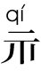
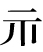

晋唐叔虞者，周武王子而成王弟。初，武王与叔虞母会时，梦天谓武王曰：“余命女【女：同“汝”。】生子，名虞，余与之唐。”及生子，文在其手曰“虞”，故遂因命之曰虞。
武王崩，成王立，唐有乱，周公诛灭唐。成王与叔虞戏，削桐叶为圭【圭：玉制礼器名，上圆下方。】以与叔虞，曰：“以此封若【若：你。】。”史佚因请择日立叔虞。成王曰：“吾与之戏耳。”史佚曰：“天子无戏言。言则史书之，礼成之，乐歌之。”于是遂封叔虞于唐。唐在河、汾之东，方百里，故曰唐叔虞。姓姬氏，字子于。
唐叔子燮，是为晋侯。晋侯子宁族，是为武侯。武侯之子服人，是为成侯。成侯子福，是为厉侯。厉侯之子宜臼，是为靖侯。靖侯已来，年纪可推。自唐叔至靖侯五世，无其年数。
靖侯十七年，周厉王迷惑暴虐，国人作乱，厉王出奔于彘，大臣行政，故曰“共和”。
十八年，靖侯卒，子厘侯司徒立。厘侯十四年，周宣王初立。十八年，厘侯卒，子献侯籍立。献侯十一年卒，子穆侯费王立。
晋国的唐叔虞，是周武王的儿子，周成王的弟弟。起初，周武王与叔虞的母亲在一起时，叔虞的母亲梦见上天对周武王说：“我让你生个孩子，起名叫虞，我要把唐这个地方赐给他。”待武夫人生下孩子后，发现婴儿手心上果真写着“虞”字，因此就给这个孩子取名为虞。
周武王驾崩后，周成王继位，唐爆发了内乱，周公派兵灭掉唐国。周成王与叔虞一起玩耍，成王将梧桐叶削成了圭璧的形状赠给了叔虞，说：“把这块唐地分封给你。”史佚于是请求成王选择一个吉日册封叔虞为诸侯。成王说：“我只不过是与他开玩笑而已。”史佚说：“天子的话没有戏言。天子说了话，史官都要如实记录，并举行典礼去完成它，吹奏乐曲来歌颂它。”周成王于是就将唐地封给了叔虞。唐地位于黄河、汾水的东边，方圆百里，因此叔虞又被称为唐叔虞。他姓姬，字子于。
唐叔的儿子燮，就是晋侯。晋侯的儿子宁族，就是武侯。武侯的儿子服人，就是成侯。成侯的儿子福，就是厉侯。厉侯的儿子宜臼，就是靖侯。靖侯以后，晋国的年代都能够推算出来了。从唐叔虞到靖侯五代，都没有记录他们在位的年数。
靖侯十七年（前842年），周厉王昏庸残暴，国人暴动，周厉王出逃前往彘地，周朝由大臣召公、周公共同治理，因此称为“共和”。
十八年（前841年），靖侯去世，其子厘侯司徒继位。厘侯十四年（前827年），周宣王刚刚继位。十八年（前823年），厘侯去世，其子献侯籍继位。献侯在位十一年（前812年）去世，其子穆侯费王继位。
穆侯四年，取齐女姜氏为夫人。七年，伐条。生太子仇。十年，伐千亩，有功。生少子，名曰成师。晋人师服曰：“异哉，君之命子也！太子曰仇，仇者雠也。少子曰成师，成师大号，成之者也。名，自命也；物，自定也。今适【适，通“嫡”。】庶名反逆，此后晋其【其：难道。】能毋乱乎？”
二十七年，穆侯卒，弟殇叔自立，太子仇出奔。殇叔三年，周宣王崩。四年，穆侯太子仇率其徒袭殇叔而立，是为文侯。
文侯十年，周幽王无道，犬戎杀幽王，周东徙。而秦襄公始列为诸侯。
三十五年，文侯仇卒，子昭侯伯立。
昭侯元年，封文侯弟成师于曲沃。曲沃邑大于翼。翼，晋君都邑也。成师封曲沃，号为桓叔。靖侯庶孙栾宾相【相：辅佐。】桓叔。桓叔是时年五十八矣，好德，晋国之众皆附焉。君子曰：“晋之乱其在曲沃矣。末大于本而得民心，不乱何待！”
七年，晋大臣潘父弑其君昭侯而迎曲沃桓叔。桓叔欲入晋，晋人发兵攻桓叔。桓叔败，还归曲沃。晋人共立昭侯子平为君，是为孝侯。诛潘父。
孝侯八年，曲沃桓叔卒，子鳝代桓叔，是为曲沃庄伯。孝侯十五年，曲沃庄伯弑其君晋孝侯于翼。晋人攻曲沃庄伯，庄伯复入曲沃。晋人复立孝侯子郄为君，是为鄂侯。
鄂侯二年，鲁隐公初立。
鄂侯六年卒。曲沃庄伯闻晋鄂侯卒，乃兴兵伐晋。周平王使虢公将兵伐曲沃庄伯，庄伯走保曲沃。晋人共立鄂侯子光，是为哀侯。
穆侯四年（前808年），娶了一位齐国的女子姜氏为妻。七年（前805年），穆侯讨伐条戎。姜氏为其生下了太子仇。十年（前802年），穆侯讨伐千亩，创建了卓越的功绩。姜氏又为其生了一个小儿子，名为成师。晋国大夫师服说：“国君为儿子取的名字真是奇怪啊！太子叫仇，仇有仇敌的含义。而小儿子叫成师，成师是个显赫的名字，有成就一番事业的含义。名字，是自己取的；而事物发展，却自有规律。如今嫡长子与庶子的名字却正相悖逆，以后晋国岂能不出现祸乱呢？”
二十七年（前785年），穆侯去世，他的弟弟殇叔自立为国君，太子仇出逃。殇叔三年（前782年），周宣王驾崩。四年（前781年），穆侯的太子仇率领自己的党徒攻打殇叔而自立，便是文侯。
文侯十年（前771年），周幽王昏庸无道，犬戎杀死了周幽王，周朝被迫向东迁徙。而秦襄公开始被列为诸侯。
三十五年（前746年），文侯仇去世，其子昭侯伯继位。
昭侯元年（前745年），将文侯的弟弟成师封在曲沃。曲沃城比翼城的规模还大。翼城，是晋的国都。成师被封在曲沃，称为桓叔。靖侯的庶孙栾宾辅佐桓叔。桓叔当时已五十八岁了，他喜好施恩于人，因此晋国的百姓都愿意归顺于他。君子说：“晋国的祸乱也许就发生在曲沃了。末大于本且又深得广大人民的忠心拥护，这样不发生祸乱还等什么！”
昭侯七年（前739年），晋国的大臣潘父杀了国君昭侯而去迎接曲沃桓叔。桓叔想要进入晋国，晋国人起兵攻打桓叔。桓叔被打败，又退回曲沃。晋人共同拥立昭侯的儿子平为国君，便是晋孝侯。晋孝侯杀死了潘父。
孝侯八年（前732年），曲沃的桓叔去世了，他的儿子鳝继承了桓叔的爵位，便是曲沃庄伯。孝侯十五年（前725年），曲沃庄伯在翼城杀了国君晋孝侯。晋国人因此而攻打曲沃庄伯，庄伯又回到了曲沃。晋国人又拥立晋孝侯的儿子郄为国君，便是鄂侯。
鄂侯二年（前722年），鲁隐公刚刚即位。
鄂侯在位六年（前718年）去世。曲沃庄伯听说鄂侯死了，于是起兵讨伐晋国的国都。周平王让虢公率兵讨伐曲沃庄伯，庄伯逃回曲沃固守。晋国人共同拥立晋鄂侯的儿子光为国君，就是晋哀侯。
哀侯二年，曲沃庄伯卒，子称代庄伯立，是为曲沃武公。哀侯六年，鲁弑其君隐公。哀侯八年，晋侵陉廷。陉廷与曲沃武公谋，九年，伐晋于汾旁，虏哀侯。晋人乃立哀侯子小子为君，是为小子侯。
小子元年，曲沃武公使韩万【韩万：姬姓，韩氏，曲沃桓叔之子，受封于韩，。】杀所虏晋哀侯。曲沃益强，晋无如之何。
晋小子之四年，曲沃武公诱召晋小子杀之。周桓王使虢仲【虢仲：前文虢叔之后，周桓王卿士。】伐曲沃武公，武公入于曲沃，乃立晋哀侯弟缗为晋侯。
晋侯缗四年，宋执郑祭仲而立突为郑君。晋侯十九年，齐人管至父弑其君襄公。
晋侯二十八年，齐桓公始霸。曲沃武公伐晋侯缗，灭之，尽以其宝器赂献于周厘王。厘王命曲沃武公为晋君，列为诸侯，于是尽并晋地而有之。
曲沃武公已即位三十七年矣，更号曰晋武公。晋武公始都晋国，前即位曲沃，通年三十八年。
武公称者，先晋穆侯曾孙也，曲沃桓叔孙也。桓叔者，始封曲沃。武公，庄伯子也。自桓叔初封曲沃以至武公灭晋也，凡六十七岁，而卒代晋为诸侯。武公代晋二岁，卒。与曲沃通年，即位凡三十九年而卒。子献公诡诸立。
哀侯二年（前716年），曲沃庄伯去逝，其子称继承了庄伯的爵位，便是曲沃武公。哀侯六年（前712年），鲁国人杀了自己的国君鲁隐公。哀侯八年（前710年），晋国人侵犯陉廷。陉廷人与曲沃武公共同谋划，于九年（前709年），在汾水河畔攻打晋国的军队，虏获了晋哀侯。于是晋国人又拥立哀侯的儿子小子为国君，就是小子侯。
小子侯元年（前709年），曲沃武公派韩万杀了所俘虏的晋哀侯。曲沃越来越强大，晋国公室对此毫无办法。
小子侯四年（前706年），曲沃武公用诱骗的手段召来小子侯并把他杀了。周桓王派遣虢仲率兵讨伐曲沃武公，武公逃回到曲沃，晋国人于是拥立晋哀侯的弟弟缗为晋侯。
晋侯缗四年（前703年），宋国人抓住了郑国的祭仲，并胁迫他立突为郑国国君。晋侯缗十九年（前688年），齐国人管至父杀了自己的国君齐襄公。
晋侯缗二十八年（前679年），齐桓公开始称霸。曲沃武公攻打晋侯缗，灭掉了他，把他的全部珠宝玉器都献给了周厘王。周厘王因此让曲沃武公当了晋国的国君，让他位列诸侯，于是曲沃武公吞占了晋国的全部土地。
曲沃武公已经即位三十七年了，才将称号改为晋武公。晋武公迁到晋国的都城，加上之前他在曲沃的当政时间，一共当政三十八年。
武公称，是先君晋穆侯的曾孙，曲沃桓叔的孙子。桓叔，最开始被封于曲沃。武公，是庄伯的儿子。从桓叔最初被封于曲沃一直到曲沃武公灭掉晋国公室，一共是六十七年，武公最终代替晋国国君的地位而成了诸侯。武公在取代晋国国君的第二年去世。加上他在曲沃的在位时间，在位共三十九年后去世。其子献公诡诸继位。
献公元年，周惠王弟颓攻惠王，惠王出奔，居郑之栎邑。
五年，伐骊戎，得骊姬、骊姬弟【骊姬弟：骊姬的妹妹。】，俱爱幸之。
八年，士蒍说公曰：“故晋之群公子多，不诛，乱且起。”乃使尽杀诸公子，而城聚都之，命曰绛，始都绛。九年，晋群公子既亡奔虢，虢以其故再伐晋，弗克。十年，晋欲伐虢，士蒍曰：“且待其乱。”
十二年，骊姬生傒齐。献公有意废太子，乃曰：“曲沃吾先祖宗庙所在，而蒲边【边：靠近。】秦，屈边翟【翟：通“狄”。】，不使诸子居之，我惧焉。”于是使太子申生居曲沃，公子重耳居蒲，公子夷吾居屈。献公与骊姬子傒齐居绛。晋国以此知太子不立也。太子申生，其母齐桓公女也，曰齐姜，早死。申生同母女弟为秦穆公夫人。重耳母，翟之狐氏女也。夷吾母，重耳母女弟也。献公子八人，而太子申生、重耳、夷吾皆有贤行。及得骊姬，乃远此三子。
献公元年（前676年），周惠王的弟弟颓攻打惠王，惠王出逃投奔郑国，住在郑国的栎邑。
五年（前672年），晋献公讨伐骊戎，得到骊姬以及骊姬的妹妹，献公十分宠爱这对姐妹。
八年（前669年），士蒍劝献公说：“原来晋国公室的公子们太多了，如果不杀死他们，就要发生祸乱。”晋献公于是派人要杀掉所有公子，同时在聚地修筑城邑作为晋国国都，称为绛，开始在绛定都。晋献公九年（前668年），晋国的公子们逃亡到虢国，虢公因此又一次起兵讨伐晋国，但没有战胜晋国。献公十年（前667年），晋国想要讨伐虢国，士蒍说：“暂且等虢国自己爆发祸乱。”
十二年（前665年），骊姬生下傒齐。献公想要废掉原来的太子，于是说：“曲沃是我们先祖宗庙所在的地方，而蒲邑靠近秦国，屈邑又靠近翟，如果不派我的儿子们去镇守那些地方，我将会十分担心。”于是，献公让太子申生到曲沃居住，让公子重耳到蒲邑居住，让公子夷吾到屈邑居住。晋献公与骊姬所生的儿子傒齐则居于国都绛。晋国人由此便知道太子申生不能继位了。太子申生，他的母亲是齐桓公的女儿，名为齐姜，死得早。申生的同母妹妹是秦穆公的夫人。重耳的母亲，是戎翟一狐氏女子。夷吾的母亲，是重耳母亲的妹妹。晋献公一共有八个儿子，其中太子申生、公子重耳和夷吾都具备贤能与德行。待献公娶了骊姬之后，他就渐渐疏远了这三个儿子。
十六年，晋献公作二军。公将上军，太子申生将下军，赵夙御戎，毕万为右，伐灭霍，灭魏，灭耿。还，为太子城曲沃，赐赵夙耿，赐毕万魏，以为大夫。士蒍曰：“太子不得立矣。分之都城，而位以卿，先为之极，又安得立！不如逃之，无使罪至。为吴太伯，不亦可乎，犹有令名。”太子不从。卜偃曰：“毕万之后必大。万，盈数也；魏，大名也。以是始赏，天开之矣。天子曰兆民，诸侯曰万民，今命之大，以从盈数，其必有众。”初，毕万卜仕于晋国，遇《屯》之《比》。辛廖【辛廖：周大夫。】占之曰：“吉。《屯》固《比》入，吉孰大焉。其后必蕃昌。”
十七年，晋侯使太子申生伐东山。里克谏献公曰：“太子奉冢祀社稷之粢盛，以朝夕视君膳者也，故曰冢子。君行则守，有守则从。从曰抚军，守曰监国，古之制也。夫率师，专行谋也；誓军旅，君与国政之所图也：非太子之事也。师在制命而已，禀命则不威，专命则不孝，故君之嗣适不可以帅师。君失其官，率师不威，将安用之？”公曰：“寡人有子，未知其太子谁立。”里克不对而退，见太子。太子曰：“吾其废乎？”里克曰：“太子勉之！教以军旅，不共是惧，何故废乎？且子惧不孝，毋惧不得立。修己而不责人，则免于难。”太子帅师，公衣之偏衣，佩之金玦。里克谢病，不从太子。太子遂伐东山。
十六年（前661年），晋献公建了两个军。献公率领上军，让太子申生率领下军，赵夙驾驭战车，毕万担当车右，讨伐灭掉了霍国、魏国以及耿国。军队归来后，献公为太子申生在曲沃修建城池，并将耿地赐给了赵夙，把魏国的土地赏赐给了毕万，让他们成为大夫。士蒍劝太子说：“太子您不可能继位当国君了。献公把先君的都城都分给了您，并授予了您卿的爵位，提前将您的禄位提到了最高，又怎能再立您为国君呢！太子不如逃离这里，以免惹祸上身。效仿吴太伯，不也很好吗？至少还能留下好名声。”太子没有听从士蒍的劝诫。掌管占卜的大夫郭偃说：“毕万的子孙后代将来肯定会大有所为。万，是满数；魏，有广大的意思。起初就把魏赏赐给毕万，是上天在保佑他呢。天子统治兆民，而诸侯统治万民，现在封毕万于意为广大的魏地，用来匹配他名字里的满数，他必定会得到众多臣民。”起初，毕万曾在晋国占卜自己的仕途，卦从《屯》变成了《比》。辛廖观察卦变说：“这代表吉利。《屯》卦所说的是事物初创时的困难坚险，《比》卦预示着有人亲辅，没有什么吉兆能比过这个了！他的子孙后代必定会兴旺昌盛。”
十七年（前660年），晋献公派太子申生讨伐东山的皋落氏。里克对献公进谏说：“太子是供奉宗庙祭祀、社稷祭品、早晚察看国君膳食的人，因此称为冢子。国君如果出行，太子就要留守于国都，如果有人代为留护，那么太子就应该跟从国君一起外出。随从国君外出叫作抚军，在都城内留守称为监国，这是古代所订立的制度。率领军队，需要对各种策略做出决断；向军队发号施令，是国君与执政的大臣应谋划的事：这都不是太子应该做的事情。军队统帅的职责在于发号施令，如果太子遇到事情都要请示国君，那样就不会有威严，如果擅自做决定，就是不孝，因此国君的继承人不可以统帅军队。将统帅一职授予太子是国君的过失，统帅军队会使太子丧失威严，将来怎么再重用他呢？”献公说：“我有很多个儿子，还没确定立谁当太子。”里克没有回答就退下了。他去见了太子。太子说：“我要被废掉了吧！”里克回答说：“太子您努力吧！让您统领军队，担心的应是没有完成任务，有什么原因要废掉您呢？而且做儿子的应该害怕自己不能尽孝，不该担心自己不能被立为国君。加强自身修养而不责难别人，就可以避免灾祸。”太子申生率领军队，晋献公让他穿左右不同颜色的衣服，佩戴金玦。里克托病引退，没有随从太子一起出征。太子于是就率领军队去讨伐东山了。
十九年，献公曰：“始吾先君庄伯、武公之诛晋乱，而虢常助晋伐我，又匿晋亡公子，果为乱。弗诛，后遗子孙忧。”乃使荀息以屈产之乘假道于虞。虞假道，遂伐虢，取其下阳以归。
献公私谓骊姬曰：“吾欲废太子，以傒齐代之。”骊姬泣曰：“太子之立，诸侯皆已知之，而数将兵，百姓附之，奈何以贱妾之故废适立庶？君必行之，妾自杀也。”骊姬详誉太子，而阴令人谮恶太子，而欲立其子。
二十一年，骊姬谓太子曰：“君梦见齐姜，太子速祭曲沃，归厘【厘：胙肉。】于君。”太子于是祭其母齐姜于曲沃，上其荐胙【荐胙：祭祀用过的肉。】于献公。献公时出猎，置胙于宫中。骊姬使人置毒药胙中。居二日，献公从猎来还，宰人上胙献公，献公欲飨之。骊姬从旁止之，曰：“胙所从来远，宜试之。”祭地，地坟；与犬，犬死；与小臣，小臣死。骊姬泣曰：“太子何忍也！其父而欲弑代之，况他人乎？且君老矣，旦暮之人，曾不能待而欲弑之！”谓献公曰：“太子所以然者，不过以妾及傒齐之故。妾愿子母辟之他国，若早自杀，毋徒使母子为太子所鱼肉也。始君欲废之，妾犹恨之；至于今，妾殊自失于此。”太子闻之，奔新城。献公怒，乃诛其傅杜原款。或谓太子曰：“为此药者乃骊姬也，太子何不自辞明之？”太子曰：“吾君老矣，非骊姬，寝不安，食不甘。即辞之，君且怒之。不可。”或谓太子曰：“可奔他国。”太子曰：“被此恶名以出，人谁内我？我自杀耳。”十二月戊申，申生自杀于新城。
十九年（前658年），晋献公说：“从前我的先君庄伯、武公平定晋国动乱的时候，虢国常常帮助晋国攻打我曲沃，又藏匿晋国逃亡的公子，果然发生了祸乱。如果不灭掉虢国，将会给后代留下忧患。”于是献公派荀息带着屈邑所产的名马去向虞国借道。虞国把道路借给了晋国，于是晋国出兵去攻打虢国，夺取了虢国的下阳后返回。
晋献公私下对骊姬说：“我打算废掉太子申生，让傒齐取代太子。”骊姬哭着说：“太子早已确立，诸侯们全都已经知道了，况且他屡次统率军队，百姓们也都归顺于他，怎么可以因为我就废掉嫡长子而立庶子呢？国君您如果一定要这么做，我只能自杀了。”骊姬假装赞许太子，而暗中派人诬陷太子，想要立自己的儿子当太子。
二十一年（前656年），骊姬对太子说：“国君梦见了齐姜，太子您快点儿去曲沃祭祀母亲，回来后把胙肉献给国君。”太子于是赶往曲沃去祭祀母亲齐姜，回来后把祭祀时使用的胙肉献给了献公。献公当时外出狩猎去了，太子就把胙肉放在了宫中。骊姬派人在胙肉中下了毒。两天后，晋献公打猎回来了，厨子把胙肉献给献公，献公正打算要吃。骊姬在旁边劝阻道：“胙肉是从很远的地方送来的，您应该试一试有没有毒然后再吃。”于是把胙肉倒到地上，地面凸起；把肉给狗吃，狗吃后马上死了；给宦臣吃，宦臣也当场毙命。骊姬哭着说：“太子怎么如此残忍！为了接替君位，连自己的亲生父亲都想杀害，更何况是对他人呢？况且国君您已经老了，还能活多久呢，可是太子竟然还迫不及待地想杀害您！”骊姬又接着对献公说：“太子会这样做，不过就是因为我与傒齐的关系。我愿意带着儿子一起逃避到其他国家去，或是趁早自杀，以免我们母子被太子杀害。当初国君打算废掉太子，我还觉得遗憾；到了今天，我才意识到自己想错了。”太子听说后，便逃到了新城。献公十分生气，就杀死了太子的老师杜原款。有人对太子说：“在胙肉中下毒的是骊姬，太子您为什么不去辩明呢？”太子说：“我的父亲已年老了，如果身边没有骊姬，他就会睡不好，吃不香。如果我说出真相，父亲一定会对骊姬很生气。我不能那么做。”有人对太子说：“可以逃奔到其他国家去。”太子说：“背着这样的恶名逃亡，谁还会容纳我呢？我只好自杀了。”十二月戊申日，太子申生在新城自杀了。
此时重耳、夷吾来朝。人或告骊姬曰：“二公子怨骊姬谮杀太子。”骊姬恐，因谮二公子：“申生之药胙，二公子知之。”二子闻之，恐，重耳走蒲，夷吾走屈，保其城，自备守。初，献公使士蒍为二公子筑蒲、屈城，弗就。夷吾以告公，公怒士蒍。士蒍谢曰：“边城少寇，安用之？”退而歌曰：“狐裘蒙茸【蒙茸：蓬乱貌。】，一国三公，吾谁适从！”卒就城。及申生死，二子亦归保其城。
二十二年，献公怒二子不辞而去，果有谋矣，乃使兵伐蒲。蒲人之宦者勃鞮命重耳促自杀。重耳逾垣，宦者追斩其衣祛。重耳遂奔翟。使人伐屈，屈城守，不可下。
是岁也，晋复假道于虞以伐虢。虞之大夫宫之奇谏虞君曰：“晋不可假道也，是且灭虞。”虞君曰：“晋我同姓，不宜伐我。”宫之奇曰：“太伯、虞仲，太王之子也，太伯亡去，是以不嗣。虢仲、虢叔，王季之子也，为文王卿士，其记勋在王室，藏于盟府。将虢是灭，何爱于虞？且虞之亲能亲于桓、庄之族乎？桓、庄之族何罪，尽灭之。虞之与虢，唇之与齿，唇亡则齿寒。”虞公不听，遂许晋。宫之奇以其族去虞。其冬，晋灭虢，虢公丑奔周。还，袭灭虞，虏虞公及其大夫井伯百里傒以媵【媵：陪嫁。】秦穆姬，而修虞祀。荀息牵曩所遗虞屈产之乘马奉之献公，献公笑曰：“马则吾马，齿亦老矣！”
这时重耳和夷吾来见献公。有人告诉骊姬说：“这两位公子怨恨你进谗言害死了太子。”骊姬十分惧怕，于是在献公面前诽谤两位公子说：“申生往胙肉里下毒，这两位公子事先就知道。”重耳和夷吾听说了这件事，都很害怕，因此重耳逃回了蒲邑，夷吾也逃回了屈邑，各在自己的城邑镇守，做好一切防御的准备。当初，晋献公派遣士蒍为重耳与夷吾修建蒲邑与屈邑的城墙，但还没有修好。夷吾把这个情况禀告给了献公，献公便对士蒍很生气。士蒍谢罪说：“边境的城邑贼寇少，修建城墙又有什么用呢？”士蒍退下时还唱道：“狐皮裘衣的毛蓬松杂乱，一个国家有三个主人，我该听从谁呢！”他终于还是把城墙修好了。等到太子申生去世后，重耳与夷吾也就回去镇守各自的城邑了。
二十二年（前655年），晋献公对重耳与夷吾不辞而别十分生气，认为他们确实与太子早有预谋，就派兵讨伐蒲邑。蒲邑有个宦官叫勃鞮命令重耳赶紧自杀。重耳翻墙而逃，宦官勃鞮紧追其后并割下了重耳的衣袖。重耳于是逃到翟。献公又派兵攻打屈邑，屈邑人奋力防守，屈邑未被攻克。
这一年，晋国再次向虞国借道去攻打虢国。虞国的大夫宫之奇向虞国君王进谏说：“不可以把路借给晋国，否则晋国将会灭掉虞国。”虞国的君王说：“晋国与我国是同姓，他们不会谋害我们的。”宫之奇说：“太伯与虞仲，都是太王的儿子，太伯逃亡离开了，因此未能继承君位。虢仲与虢叔，都是王季的儿子，当过周文王的执政大臣，记载他们为周王室立下的功勋的文书还在盟府里保存着。晋国将要灭掉虢国，又怎么会爱惜虞国呢？况且虞国与晋国再亲近还能比桓叔、庄伯家族与它更亲吗？桓叔与庄伯的家族有什么过错，可是晋国还是把他们都灭掉了。虞国与虢国的关系，就如同是嘴唇和牙齿的关系，嘴唇如果没有了，牙齿就会受冻。”虞公没有听宫之奇的劝说，便答应了晋国的请求。宫之奇带领他的家族离开了虞国。这年冬季，晋国灭掉了虢国，虢公丑被迫逃奔周国。晋军在返还途中，乘机攻袭并灭掉虞国，虏获了虞公以及大夫井伯、百里傒，把他们作为献公女儿秦穆姬的陪嫁，但并没有废黜虞国的祭祀。荀息把献公从前赠给虞国的屈邑出产的名马又归还给了献公，献公笑着说：“马仍然是我之前的马，只是已经老了。”
二十三年，献公遂发贾华【贾华：晋国大夫。】等伐屈，屈溃。夷吾将奔翟。冀芮【冀芮：即却芮，字子公，晋国大臣。】曰：“不可，重耳已在矣，今往，晋必移兵伐翟，翟畏晋，祸且及。不如走梁，梁近于秦，秦强，吾君百岁后可以求入焉。”遂奔梁。二十五年，晋伐翟，翟以重耳故，亦击晋于啮桑，晋兵解而去。
当此时，晋强，西有河西，与秦接境，北边翟，东至河内。
骊姬弟生悼子。
二十六年夏，齐桓公大会诸侯于葵丘。晋献公病，行后，未至，逢周之宰孔。宰孔曰：“齐桓公益骄，不务德而务远略，诸侯弗平。君弟毋会，毋如晋何。”献公亦病，复还归。病甚，乃谓荀息曰：“吾以傒齐为后，年少，诸大臣不服，恐乱起，子能立之乎？”荀息曰：“能。”献公曰：“何以为验？”对曰：“使死者复生，生者不惭，为之验。”于是遂属傒齐于荀息。荀息为相，主国政。秋九月，献公卒。里克、邳郑【邳郑：姬姓，邳氏，名郑，一名郑父，晋献侯之后，重耳一党。】欲内重耳，以三公子之徒作乱，谓荀息曰：“三怨将起，秦、晋辅之，子将何如？”荀息曰：“吾不可负先君言。”十月，里克杀傒齐于丧次，献公未葬也。荀息将死之，或曰不如立傒齐弟悼子而傅之，荀息立悼子而葬献公。十一月，里克弑悼子于朝，荀息死之。君子曰：“《诗》所谓‘白圭之玷，犹可磨也，斯言之玷，不可为也’，其荀息之谓乎！不负其言。”初，献公将伐骊戎，卜曰“齿牙为祸”。及破骊戎，获骊姬，爱之，竟以乱晋。
二十三年（前654年），晋献公派贾华等人前去讨伐屈邑，屈邑溃败。夷吾想要逃奔翟国。冀芮说：“不行，重耳已经在翟国了，如今您再前往的话，晋国必定会调兵讨伐翟国，翟国畏惧晋国，到时灾难就会降临到你头上。不如逃到梁国，梁国邻近秦国，秦国强大，等我们的国君去世后，您可以求秦国帮您重回晋国。”夷吾于是逃到梁国。二十五年（前652年），晋军攻打翟国，翟国为了保护重耳，也在啮桑攻击晋军，结果晋国撤军。
在此时期，晋国变得很强大，西边拥有河西，与秦国接壤，北边与翟国相邻，东到河内。
骊姬的妹妹生下悼子。
二十六年（前651年）夏季，齐桓公召集诸侯在葵丘会盟。晋献公由于生病，出发晚了，还没有赶到葵丘，在路上遇到了周国的宰孔。宰孔说：“齐桓公愈发骄横跋扈了，不致力修行德政却忙着讨伐远方，诸侯们心里不平。您别去参加那个盟会了，齐国也不敢对晋国怎么样的。”晋献公也是因为自己生病了，就回到了晋国。后来晋献公病重，就对荀息说：“我打算立傒齐为继承人，可是他还小，大臣们会不服，我害怕会出乱子，你能够拥立他吗？”荀息回答说：“能。”晋献公问：“你拿什么作为凭证呢？”荀息回答说：“即使您死后又复活了，在世的我对您依然不会感到有任何的愧疚，以此作为凭证。”于是献公便将傒齐托付给了荀息。荀息担任相国，主持朝政。秋季九月，献公去世。里克、邳郑打算迎接重耳回国，便利用三位公子的党羽发起动乱，并对荀息说：“三个怨家将要作乱了，秦国人与晋国的百姓们都会帮扶他们，你将要如何做呢？”荀息说：“我不可以背弃对先君许下的承诺。”十月，里克在晋献公停灵治丧的地方杀了傒齐，献公此时还未下葬。荀息想为此而死，有人劝他说不如拥立傒齐的弟弟悼子并辅佐他，于是荀息便拥立悼子并安葬了晋献公。十一月，里克在朝堂之上杀了悼子，荀息因此而自杀了。君子说：“《诗》中所说的‘白玉如果有了污点，还能够磨掉，可是话要是说错了，那就没办法更改了’，说的便是荀息这样的人吧！至死都没有辜负自己许下的诺言。”当初，晋献公要讨伐骊戎，卦辞说“搬弄谗言将会酿成灾祸。”等到攻破了骊戎，得到了骊姬，晋献公非常宠爱她，结果竟因此而扰乱了晋国。
里克等已杀傒齐、悼子，使人迎公子重耳于翟，欲立之。重耳谢曰：“负父之命出奔，父死不得修人子之礼侍丧，重耳何敢入！大夫其更立他子。”还报里克，里克使迎夷吾于梁。夷吾欲往，吕省【吕省：也作“吕甥”，晋国大夫。】、郄芮曰：“内犹有公子可立者而外求，难信。计非之秦，辅强国之威以入，恐危。”乃使郄芮厚赂秦，约曰：“即得入，请以晋河西之地与秦。”及遗里克书曰：“诚得立，请遂封子于汾阳之邑。”秦缪公乃发兵送夷吾于晋。齐桓公闻晋内乱，亦率诸侯如晋。秦兵与夷吾亦至晋，齐乃使隰朋【隰朋：齐国大夫，齐庄公曾孙。】会秦俱入夷吾，立为晋君，是为惠公。齐桓公至晋之高梁而还归。
惠公夷吾元年，使邳郑谢秦曰：“始夷吾以河西地许君，今幸得入立。大臣曰：‘地者先君之地，君亡在外，何以得擅许秦者？’寡人争之弗能得，故谢秦。”亦不与里克汾阳邑，而夺之权。四月，周襄王使周公忌父会齐、秦大夫共礼晋惠公。惠公以重耳在外，畏里克为变，赐里克死。谓曰：“微里子寡人不得立。虽然，子亦杀二君一大夫，为子君者不亦难乎？”里克对曰：“不有所废，君何以兴？欲诛之，其无辞乎？乃言为此！臣闻命矣。”遂伏剑而死。于是邳郑使谢秦未还，故不及难。
里克等人已经杀了傒齐和悼子，于是派使者到翟国迎接重耳回国，打算拥立重耳为国君。重耳推辞说：“我违背父王的命令逃出了晋国，父王去世了我又没有奉行当儿子的礼节守丧，重耳我怎么敢回国即位啊！大夫们还是改立其他的公子吧。”使者回来将重耳的话禀告给了里克，里克于是又派使者前往梁国迎接夷吾。夷吾打算回国即位，吕省、郄芮说：“国内仍有公子可以即位但却到国外来找其他公子，很难让人相信。我们请求秦国来帮忙，凭借秦国强大的威力而回到晋国，否则恐怕会有危险。”于是夷吾派郄芮用厚礼贿赂秦国，夷吾还向秦国立下誓约说：“如果我能成功回国即位，愿意把晋国黄河以西的土地献给秦国。”夷吾又给里克写封信说：“我果真能被立为国君，愿意将你封在汾阳。”秦穆公因此便派兵护送夷吾回到了晋国。齐桓公听说晋国爆发了内乱，也率领诸侯来到晋国。秦军与夷吾这时也已到达了晋国，齐国就派隰朋会同秦军一同将夷吾送入国都，立他为晋国国君，便是晋惠公。齐桓公到了晋国的高梁便返回齐国了。
晋惠公夷吾元年（前650年），派邳郑向秦国国君道歉说：“起初我曾许诺把晋国黄河以西的地方献给您，现在我有幸得以回国当了国君。可是大臣们却说：‘晋国的土地是先君留下来的，你逃亡在外，有什么权力擅自把晋国的土地献给秦国呢？’我争取了可是没能得到大臣们的同意，因此特来向您道歉。”晋惠公也没有把汾阳赏封给里克，反而剥夺了他原有的职权。四月，周襄王派周公忌父会同齐、秦两国大夫们一起为晋惠公举办一个正式的即位大典。惠公因为重耳还逃亡在国外，担心里克会发起动乱，于是便命令里克自杀。并对他说：“没有你的话，我就不会被立为国君。虽然如此，可是你毕竟也杀死了两位国君以及一位大夫，当你国君的人不是太难了吗？”里克回答说：“如果我不废黜傒齐与悼子，国君您又如何能够兴起呢？想要杀死我，还愁找不到理由吗？您何必还要说出这番话来！我服从命令就是了。”于是里克便拔剑自刎了。而此时邳郑正出使秦国道歉尚未返回，因此得以免遭此难。
晋君改葬恭太子申生。秋，狐突【狐突：姬姓，狐氏，名突，字伯行，晋文公的外祖父。】之下国，遇申生，申生与载而告之曰：“夷吾无礼，余得请于帝【帝：天帝。】，将以晋与秦，秦将祀余。”狐突对曰：“臣闻神不食非其宗，君其祀毋乃绝乎？君其图之。”申生曰：“诺，吾将复请帝。后十日，新城西偏将有巫者见我焉。”许之，遂不见。及期而往，复见，申生告之曰：“帝许罚有罪矣，弊【弊：败。】于韩。”儿乃谣曰：“恭太子更葬矣，后十四年，晋亦不昌，昌乃在兄。”
邳郑使秦，闻里克诛，乃说秦缪公曰：“吕省、郄称、冀芮实为不从。若重赂与谋，出晋君，入重耳，事必就。”秦缪公许之，使人与归报晋，厚赂三子。三子曰：“币厚言甘，此必邳郑卖我于秦。”遂杀邳郑及里克、邳郑之党七舆大夫。邳郑子豹奔秦，言伐晋，缪公弗听。
惠公之立，倍秦地及里克，诛七舆大夫，国人不附。二年，周使召公过礼晋惠公，惠公礼倨，召公讥之。
四年，晋饥，乞籴于秦。缪公问百里傒，百里傒曰：“天灾流行，国家代有，救灾恤邻，国之道也。与之。”邳郑子豹曰：“伐之。”缪公曰：“其君是恶，其民何罪！”卒与粟，自雍属绛。
晋惠公按照礼仪改葬了恭太子申生。秋季，狐突来到了陪都曲沃，遇到了申生的灵魂，申生让他同乘一辆车并告诉他说：“夷吾不守礼法，我已请求天帝，将要把晋国送给秦国，秦国人将会祭祀我。”狐突回答说：“我听说神灵不能享用非同宗族所供的供品，如此一来，您的祭祀不就要断绝了吗？您最好再仔细考虑一下。”申生说：“好吧，我将会再次请求天帝。十天以后，在新城的西边将会有一位巫者显现我的魂灵。”狐突答应了与申生的约定，申生于是消失了。到了十天的期限，狐突前往新城的西边，再次遇到了申生，申生告诉他说：“天帝已经答应我要惩罚有罪过的人了，夷吾将会败于韩原。”孩童们于是唱起了歌谣：“恭太子改葬了，之后十四年，晋国也不会昌盛，昌盛是在夷吾的兄长执政时。”
邳郑出使秦国，听说里克已被杀死，于是劝秦缪公说：“吕省、郄称、冀芮的确是不同意把河西之地献给秦国。如果用厚礼贿赂他们，并和他们谋划，将晋惠公赶出晋国，迎接重耳回国即位，秦国就一定能得到河西之地。”秦缪公答应了，派人和邳郑一同回到晋国，用重金贿赂了吕省、郄称与冀芮。这三位大夫说：“财礼如此丰厚，话语这样甘甜，这一定是因为邳郑在秦国把我们出卖了。”于是三位大夫杀死了邳郑以及里克、邳郑的党徒等七舆大夫。邳郑的儿子邳豹投奔秦国，并恳请秦国攻打晋国，秦缪公并未听从。
晋惠公即位后，违背了给秦国和里克土地的承诺，又杀死了七舆大夫，所以晋国人都不愿意归顺于他。惠公二年（前649年），周天子派召公去晋国拜访惠公，惠公十分傲慢无礼，召公因此讥笑了惠公。
四年（前647年），晋国闹饥荒，向秦国乞求购买粮食。秦缪公向百里傒征求意见，百里傒回答说：“天灾频发，每个国家都有可能发生，救助灾民、赈济邻邦，是国家的道义。给他们。”邳郑的儿子邳豹则说：“应该趁此机会讨伐晋国。”秦缪公说：“晋国的国君的确有罪过，可是晋国的百姓又有什么罪呢！”秦缪公最终将粮食卖给晋国，粮食从秦国的雍城源源不断地运送到晋国的绛城。
五年，秦饥，请籴于晋。晋君谋之，庆郑曰：“以秦得立，已而倍其地约。晋饥而秦贷我，今秦饥请籴，与之何疑？而谋之！”虢射曰：“往年天以晋赐秦，秦弗知取而贷我。今天以秦赐晋，晋其可以逆天乎？遂伐之。”惠公用虢射谋，不与秦粟，而发兵且伐秦。秦大怒，亦发兵伐晋。
六年春，秦缪公将兵伐晋。晋惠公谓庆郑曰：“秦师深矣，奈何？”郑曰：“秦内君，君倍其赂；晋饥秦输粟，秦饥而晋倍之，乃欲因其饥伐之：其深不亦宜乎！”晋卜御右，庆郑皆吉。公曰：“郑不孙【不孙：无礼。孙，通“逊”。】。”乃更令步阳御戎，家仆徒为右，进兵。九月壬戌，秦缪公、晋惠公合战韩原。惠公马騺不行，秦兵至，公窘，召庆郑为御。郑曰：“不用卜，败不亦当乎！”遂去。更令梁繇靡御，虢射为右，辂秦缪公。缪公壮士冒败晋军，晋军败，遂失秦缪公，反获晋公以归。秦将以祀上帝。晋君姊为缪公夫人，衰绖涕泣。公曰：“得晋侯将以为乐，今乃如此。且吾闻箕子见唐叔之初封，曰‘其后必当大矣’，晋庸可灭乎！”乃与晋侯盟王城而许之归。晋侯亦使吕省等报国人曰：“孤虽得归，毋面目见社稷，卜日立子圉。”晋人闻之，皆哭。秦缪公问吕省：“晋国和乎？”对曰：“不和。小人惧失君亡亲，不惮立子圉，曰‘必报仇，宁事戎、狄’。其君子则爱君而知罪，以待秦命，曰‘必报德’。有此二故，不和。”于是秦缪公更舍晋惠公，馈之七牢。十一月，归晋侯。晋侯至国，诛庆郑，修政教。谋曰：“重耳在外，诸侯多利内之。”欲使人杀重耳于狄。重耳闻之，如齐。
五年（前646年），秦国爆发了饥荒，向晋国请求购买粮食。晋惠公召集大臣商量，庆郑说：“君王是凭借秦国的力量才得以被立为国君的，可是您即位后却违背了给秦国河西土地的誓约。去年晋国闹饥荒的时候，秦国卖给我们粮食。如今秦国爆发了饥荒，请求我们卖粮食给他们，我们当然要卖给他们粮食，这有什么疑问吗？我们还有什么必要在此商讨呢！”虢射则说：“去年上天把晋国赏赐给了秦国，可是秦国却不知道乘机攻取我们反而卖粮食给我们。如今上天把秦国赏赐给了晋国，晋国怎么能够忤逆上天之意呢？我们应该攻打秦国。”晋惠公采用了虢射的计谋，没有把粮食卖给秦国，反而派兵讨伐秦国。秦缪公十分生气，也派兵攻打晋国。
六年（前645年）春季，秦缪公率领军队讨伐晋国。晋惠公对庆郑说：“秦军已经深入我国境内了，该怎么办啊？”庆郑说：“当初秦国护送国君您回国即位，您即位后却违背了给秦国土地的诺言；晋国爆发了饥荒，秦国源源不断地运粮食给我们，可是秦国闹饥荒时，晋国没有给予秦国援助，反而想借机攻取秦国：秦军如今深入晋国国境不也应该吗！”晋惠公通过占卜来选驾战车以及担当护卫的人，占卜的结果都是以庆郑为吉利。晋惠公说：“庆郑有些无礼。”于是就改令步阳驾战车，家仆徒担当车右，晋国军队开始向秦国进军。九月壬戌日，秦缪公与晋惠公在韩原交战。晋惠公的马陷入了泥潭当中，无法行走，秦军这时候赶来了，惠公十分窘迫，召来庆郑帮他驾车。庆郑说：“不按占卜的结果去做，失败不也应该吗！”庆郑说完便离开了。惠公只好改命梁繇靡为他驾车，虢射担当车右，迎击秦缪公。秦缪公手下的英勇士兵拼死打败了晋军，晋军败退，晋惠公没有抓到秦缪公，反而被秦穆公俘获并带被回了秦国。秦缪公想要杀掉晋惠公祭祀上天。晋惠公的姐姐是秦缪公的妻子，她穿着丧服痛哭不已。秦缪公说：“俘虏了晋侯应该高兴啊，可是如今你却为此而悲伤起来。况且我曾听说箕子看见唐叔当初刚刚被分封时，就说过‘唐叔的后代一定会繁荣昌盛’，晋国怎么能这样就灭亡了呢！”秦穆公于是与晋惠公在王城订立盟约，答应放他回到晋国。晋惠公也派遣吕省等人回报晋国人说：“我虽然能够回到晋国，但也没有颜面再见宗庙社稷了，选个良辰吉日让我的儿子圉继位吧。”晋国人听到这番话后，全都伤心落泪了。秦缪公问吕省说：“晋国内部团结和睦吗？”吕省回答说：“不和睦。百姓们惧怕没有国君以后，亲人们也会死去，他们并不怕拥立公子圉当国君，都说‘一定要报仇，宁愿去服侍戎、狄’。而那些贵族们却很爱护晋惠公，并且知道他有罪，正等待秦国送晋惠公回国的命令，并说‘一定会报答秦国的恩德’。晋国国内因为有这样两种意见，所以不和睦。”秦穆公于是为晋惠公更换了居住的馆舍，并且用“七牢”来招待他。十一月，秦穆公送晋惠公回晋国。晋惠公回到晋国后，杀害了庆郑，重新修整政治教化。晋惠公与大臣们谋划说：“重耳还逃亡在国外，诸侯中大多认为护送他回国当晋国国君对自己有好处。”于是晋惠公就想派人到狄国去杀重耳。重耳听说后，立即逃到了齐国。
八年，使太子圉质秦。初，惠公亡在梁，梁伯以其女妻之，生一男一女。梁伯卜之，男为人臣，女为人妾，故名男为圉【圉：养马者。】，女为妾。
十年，秦灭梁。梁伯好土功，治城沟，民力罢，怨，其众数相惊，曰“秦寇至”，民恐惑，秦竟灭之。
十三年，晋惠公病，内有数子。太子圉曰：“吾母家在梁，梁今秦灭之，我外轻于秦而内无援于国。君即不起，病【病：担心，忧虑。】大夫轻，更立他公子。”乃谋与其妻俱亡归。秦女曰：“子一国太子，辱在此。秦使婢子侍，以固子之心。子亡矣，我不从子，亦不敢言。”子圉遂亡归晋。十四年九月，惠公卒，太子圉立，是为怀公。
子圉之亡，秦怨之，乃求公子重耳，欲内之。子圉之立，畏秦之伐也。乃令国中诸从重耳亡者与期，期尽不到者尽灭其家。狐突之子毛及偃从重耳在秦，弗肯召。怀公怒，囚狐突。突曰：“臣子事重耳有年数矣，今召之，是教之反君也。何以教之？”怀公卒杀狐突。秦缪公乃发兵送内重耳，使人告栾、郄之党为内应，杀怀公于高梁，入重耳。重耳立，是为文公。
八年（前643年），晋惠公派太子圉到秦国当人质。当初，惠公逃亡到梁国时，梁伯将女儿嫁给了他，生了一双儿女。梁伯为这两个孩子占卜，卜辞说将来男孩会成为臣仆，女孩会成为妾，因此为男孩取名叫圉，女孩叫妾。
十年（前641年），秦国灭掉梁国。梁伯爱好大兴土木，修建城池沟堑，使百姓疲惫不堪，怨声载道，多次互相惊吓，叫道“秦兵来了”，百姓们恐慌害怕，结果秦国果真灭了梁国。
十三年（前638年），晋惠公生病，他有好几个儿子。当时在秦国当人质的太子圉说：“我母亲的娘家是梁国，如今梁国已被秦国灭掉了，我在国外受到秦国的轻视，在国内也得不到他人的援助。如果父亲一病不起，我担心晋国的大夫们一定也会轻视我，改立其他公子。”太子圉于是与妻子谋划一起逃回晋国。服侍太子圉的秦国女子说：“您是一国的太子，蒙受屈辱在这里当人质。秦国国君派我来侍奉您，目的是要我稳固住您的心。您快逃走吧，可我不能跟随您走，但也不会说出去。”公子圉于是逃回晋国。十四年（前637年）九月，晋惠公去世，太子圉继位，就是晋怀公。
太子圉从秦国逃走了，秦穆公十分生气，于是访求公子重耳，打算护送他回国当国君。公子圉继承国君之位后，畏惧秦国会派兵攻打晋国，于是下令跟从重耳逃亡在外的人全部按期回国，如果到期还没有回来就会诛灭他的全家。狐突的儿子狐毛以及狐偃都跟随重耳逃到了秦国，狐突不愿让他们回来。晋怀公非常生气，就囚禁了狐突。狐突说：“我的儿子侍奉重耳已有好几年了，现在召他们回国，这就是让他们背叛自己的主子。以后我还怎么教导他们？”晋怀公终于杀死了狐突。秦穆公于是派兵护送重耳返回晋国，并派人告知栾氏、郄氏的党羽在国内接应，在高梁杀了晋怀公，送重耳返回国内。重耳继位，便是晋文公。
晋文公重耳，晋献公之子也。自少好士，年十七，有贤士五人：曰赵衰；狐偃咎犯，文公舅也；贾佗；先轸；魏武子。自献公为太子时，重耳固已成人矣。献公即位，重耳年二十一。献公十三年，以骊姬故，重耳备蒲城守秦。献公二十一年，献公杀太子申生，骊姬谗之，恐，不辞献公而守蒲城。献公二十二年，献公使宦者履鞮趣【趣：通“促”。】杀重耳。重耳逾垣，宦者逐斩其衣祛。重耳遂奔狄。狄，其母国也。是时重耳年四十三。从此五士，其余不名者数十人，至狄。
狄伐咎如，得二女：以长女妻重耳，生伯鯈、叔刘；以少女妻赵衰，生盾。居狄五岁而晋献公卒，里克已杀傒齐、悼子，乃使人迎，欲立重耳。重耳畏杀，因固谢，不敢入。已而晋更迎其弟夷吾立之，是为惠公。惠公七年，畏重耳，乃使宦者履鞮与壮士欲杀重耳。重耳闻之，乃谋赵衰等曰：“始吾奔狄，非以为可用与，以近易通，故且休足【休足：停止行进。】。休足久矣，固愿徙之大国。夫齐桓公好善，志在霸王，收恤诸侯。今闻管仲、隰朋死，此亦欲得贤佐，盍往乎？”于是遂行。重耳谓其妻曰：“待我二十五年不来，乃嫁。”其妻笑曰：“犁【犁：等到。】二十五年，吾冢上柏大矣。虽然，妾待子。”重耳居狄凡十二年而去。
晋文公重耳，是晋献公的儿子。他从年少时起就喜好结交贤德的士人，十七岁时，他的身边就已有五名贤士：赵衰；狐偃咎犯，是晋文公的舅父；贾佗；先轸；魏武子。在晋献公当太子时，重耳就已长大成人了。晋献公即位时，重耳二十一岁。献公十三年（前664年），由于骊姬的缘故，重耳被派到蒲城去防守秦国。献公二十一年（前656年），献公杀了太子申生，骊姬又进谗言陷害重耳，重耳恐惧，没有辞别献公就逃回了蒲邑。献公二十二年（前655年），献公派宦官履鞮赶快把重耳杀死。结果重耳翻墙逃走了，宦官履鞮紧追不舍，砍掉了重耳的衣袖。重耳于是逃奔狄国。狄国是重耳母亲的故国。这时重耳四十三岁。从此那五名贤士，还有不知名的数十人，都跟随重耳一起来到狄国。
狄国攻打咎如，虏获了咎如国的两位女子。狄国国君将年长的女子嫁给了重耳，生下了伯鯈、叔刘；狄国国君把年少的女子嫁给了赵衰，生下了盾。重耳在狄国住了五年，晋献公去世，里克已杀了傒齐、悼子，派人来迎接重耳回国，想要拥立重耳为国君。重耳担心自己会被杀害，因此执意谢绝了，没敢回晋国。后来晋国改为迎回重耳的弟弟夷吾并立为国君，就是晋惠公。惠公七年（前644年），晋惠公担心重耳会抢夺君位，于是派宦官履鞮带领壮士一起去杀重耳。重耳听说后，就与赵衰等人商讨说：“当初我逃亡到狄国，并不是为了利用此地来成就事业，而是因为此地离晋国很近，容易到达，所以暂时在此停留。在这里歇得久了，我希望可以迁到大国。齐桓公乐善好施，志在称霸，于是收留体恤各国的诸侯。如今听说管仲、隰朋都去世了，齐桓公也渴望得到贤能的人来辅佐他成就霸业，我们为何不去那里呢？”于是重耳就前往齐国了。重耳对妻子说：“等我二十五年还没回来的话，你就嫁给别人吧。”他的妻子笑了笑说：“等到二十五年，我坟头上的柏树都长大了。虽然这样，我还是会一直等待你的。”重耳在狄国居住了十二年才离去。
过卫，卫文公不礼。去，过五鹿，饥而从野人【野人：农夫。】乞食，野人盛土器中进之。重耳怒。赵衰曰：“土者，有土也，君其拜受之。”
至齐，齐桓公厚礼，而以宗女妻之，有马二十乘，重耳安之。重耳至齐二岁而桓公卒，会竖刀等为内乱，齐孝公之立，诸侯兵数至。留齐凡五岁。重耳爱齐女，毋去心。赵衰、咎犯乃于桑下谋行。齐女侍者在桑上闻之，以告其主。其主乃杀侍者，劝重耳趣行。重耳曰：“人生安乐，孰知其他！必死于此，不能去。”齐女曰：“子一国公子，穷而来此，数士者以子为命。子不疾反国，报劳臣，而怀女德，窃为子羞之。且不求，何时得功？”乃与赵衰等谋，醉重耳，载以行。行远而觉，重耳大怒，引戈欲杀咎犯。咎犯曰：“杀臣成子，偃之愿也。”重耳曰：“事不成，我食舅氏之肉。”咎犯曰：“事不成，犯肉腥臊，何足食！”乃止，遂行。
过曹，曹共公不礼，欲观重耳骈胁【骈胁：肋骨紧密相连如一骨。】。曹大夫厘负羁曰：“晋公子贤，又同姓，穷来过我，奈何不礼！”共公不从其谋。负羁乃私遗重耳食，置璧其下。重耳受其食，还其璧。
去，过宋。宋襄公新困兵于楚，伤于泓，闻重耳贤，乃以国礼礼于重耳。宋司马公孙固善于咎犯，曰：“宋小国新困，不足以求入，更之大国。”乃去。
重耳经过卫国时，卫文公没有以礼相待。离开卫国后，又路过五鹿，饥饿得向当地农夫讨饭，当地人将土块放在器皿中给他吃。重耳十分生气。赵衰说：“土块，象征着将来你会拥有这片土地，你应该拜谢接受它。”
重耳到了齐国，齐桓公以厚礼相待，并将宗室之女嫁给重耳为妻，又赐给他八十匹马，重耳很满足于现有的生活。重耳到齐国两年后齐桓公就去世了，当时正巧赶上竖刀等人发起叛乱，齐孝公继承了君位，各诸侯国的军队趁机屡次进犯齐国。重耳在齐国一共住了五年。重耳很喜欢在齐国娶的妻子，心里根本不想离开齐国。赵衰、咎犯就在一棵桑树底下商讨如何劝重耳离开齐国。重耳妻子的侍女恰好在桑树上偷听到了他们的谈话，就将此事告诉了她的主人。重耳的妻子却杀了那个侍女，并劝重耳赶紧离开齐国。重耳说：“人生但求安乐，何必管其他的事呢！我一定要老死在齐国，不能离开。”他的妻子说：“您可是一国的公子，穷困时被迫来到这里，跟随你的那些贤士个个愿为您效死。您不赶快返回晋国，报答您辛劳的臣子，却在此贪恋女色，我私下替您感到羞耻。况且现在不回晋国，什么时候才会有成功的一天？”于是她就与赵衰等人合谋，把重耳灌醉抬到车上，离开了齐国。走了很远，重耳才醒了过来，他十分生气，拿起戈就要杀咎犯。咎犯说：“杀死我就能够成就您的事业，这是我狐偃的夙愿啊。”重耳说：“如果事情没有成功，我就吃了你的肉。”咎犯说：“就算事情没有成功，可我的肉又腥又臊不好吃，怎么能值得您吃呢！”于是重耳这才罢休，继续向前赶路。
重耳经过曹国，曹共公没有以礼相待，想偷看重耳身上紧密相连的畸形肋骨。曹国的大夫厘负羁说：“晋公子贤能，又和我国是同姓，他在困窘时途经我国，为什么不能以礼相待呢！”曹共公没有听从厘负羁的劝告。厘负羁就私下送食物送给重耳，并在食物下面放了一块玉璧。重耳接受了食物，却把玉璧还给了厘负羁。
重耳离开曹国，路过宋国。宋襄公刚刚被楚国打败，在泓之战中受了伤，他听说重耳贤明有才能，于是用对待诸侯的礼节接待了重耳。宋国的司马公孙固与咎犯的关系很好，于是他说：“宋国是个小国，最近又打了败仗，没有能力帮助你们回国，还是另投大国吧。”于是重耳离开了宋国。
过郑，郑文公弗礼。郑叔瞻【叔瞻：郑国大夫，郑文公弟。】谏其君曰：“晋公子贤，而其从者皆国相，且又同姓。郑之出自厉王【郑之出自厉王：郑国始封君郑桓公是周厉王之子。】，而晋之出自武王【晋之出自武王：晋国始封君唐叔虞是周武王之子。】。”郑君曰：“诸侯亡公子过此者众，安可尽礼！”叔瞻曰：“君不礼，不如杀之，且后为国患。”郑君不听。
重耳去之楚，楚成王以适诸侯礼待之，重耳谢不敢当。赵衰曰：“子亡在外十余年，小国轻子，况大国乎？今楚大国而固遇子，子其毋让，此天开子也。”遂以客礼见之。成王厚遇重耳，重耳甚卑。成王曰：“子即反国，何以报寡人？”重耳曰：“羽毛齿角玉帛，君王所余，未知所以报。”王曰：“虽然，何以报不谷？”重耳曰：“即不得已，与君王以兵车会平原广泽，请辟王三舍。”楚将子玉怒曰：“王遇晋公子至厚，今重耳言不孙，请杀之。”成王曰：“晋公子贤而困于外久，从者皆国器，此天所置，庸可杀乎？且言何以易之！”居楚数月，而晋太子圉亡秦，秦怨之；闻重耳在楚，乃召之。成王曰：“楚远，更数国乃至晋。秦晋接境，秦君贤，子其勉行！”厚送重耳。
重耳路过郑国，郑文公也没有以礼相待。郑国大夫叔瞻劝谏他的国君说：“晋公子贤明有才能，他的随从全是国家的栋梁之材，况且又与我们郑国是同姓。郑国的先祖是周厉王的儿子，晋国的先祖是周武王的儿子。”郑文公说：“诸侯国公子流亡到我国的太多了，怎么可能全都以礼相待呢！”叔瞻说：“如果国君您不能对他以礼相待，还不如把他杀死，以免将来成为我国的祸患。”郑文公没有听从叔瞻的劝告。
重耳离开郑国后前往楚国，楚成王用对待诸侯的礼节款待他，重耳谢绝了，称不敢当。赵衰说：“您在外流亡了十多年，小国都轻视您，更何况是大国呢？如今楚国这个大国竟然以厚礼招待您，您就不要辞让了，这可是上天在护佑您啊。”于是重耳按作客的礼节会见了楚成王。楚成王用厚礼款待了重耳，重耳非常谦卑。楚成王说：“假如有一天您返回了晋国，将会怎样报答我呢？”重耳说：“珍禽异兽、宝玉绢帛等东西，国君您都有很多了，我不知道该用什么礼物来报答您。”楚成王说：“即便如此，你总得拿什么来报答我吧？”重耳回答说：“将来万不得已，晋国与楚国在平原或是湖沼地带交战，请允许我为您退避三舍之地。”楚国将军子玉大怒道：“国君对晋国公子十分厚待，可是今天重耳却出言不逊，请让我杀了他。”楚成王说：“晋公子很贤明，可是流亡在外太久了，跟从他的都是栋梁之材，这都是上天安排好的，我怎么能杀死他呢？况且又能让他改说什么呢！”重耳在楚国住了几个月以后，晋国太子圉从秦国逃回了晋国，秦缪公十分怨恨太子圉；他听说重耳在楚国，于是邀请他来秦国。楚成王说：“楚国距离晋国很远，要途经好多个国家才可到达晋国。而秦国与晋国交界，秦缪公又很贤明，你去秦国吧！”楚成王准备了厚礼为重耳送行。
重耳至秦，缪公以宗女五人妻重耳，故子圉妻与往。重耳不欲受，司空季子【司空季子：名胥臣，晋国大臣。】曰：“其国且伐，况其故妻乎！且受以结秦亲而求入，子乃拘小礼，忘大丑乎！”遂受。缪公大欢，与重耳饮。赵衰歌《黍苗》【《黍苗》：《诗经·小雅》篇名。】诗。缪公曰：“知子欲急反国矣。”赵衰与重耳下，再拜曰：“孤臣之仰君，如百谷之望时雨。”是时晋惠公十四年秋。惠公以九月卒，子圉立。十一月，葬惠公。十二月，晋国大夫栾、郄等闻重耳在秦，皆阴来劝重耳、赵衰等反国，为内应甚众。于是秦缪公乃发兵与重耳归晋。晋闻秦兵来，亦发兵拒之。然皆阴知公子重耳入也。唯惠公之故贵臣吕、郄之属不欲立重耳。重耳出亡凡十九岁而得入，时年六十二矣，晋人多附焉。
文公元年春，秦送重耳至河。咎犯曰：“臣从君周旋天下，过亦多矣。臣犹知之，况于君乎？请从此去矣。”重耳曰：“若反国，所不与子犯共者，河伯【河伯：黄河水神。】视之！”乃投璧河中，以与子犯盟。是时介子推从，在船中，乃笑曰：“天实开公子，而子犯以为己功而要市于君，固足羞也。吾不忍与同位。”乃自隐渡河。秦兵围令狐，晋军于庐柳。二月辛丑，咎犯与秦晋大夫盟于郇。壬寅，重耳入于晋师。丙午，入于曲沃。丁未，朝于武宫，即位为晋君，是为文公。群臣皆往。怀公圉奔高梁。戊申，使人杀怀公。
重耳来到秦国后，秦缪公把五个同宗女子都嫁给了重耳为妻，公子圉原先的妻子也在其中。重耳不想接受公子圉原先的妻子，司空季子说：“公子圉的国家您尚且要去攻打，更何况是占有他的妻子呢！而且，您接受了这个女子就可以与秦国结成姻亲关系，就可以求秦国帮您返回晋国了，您现在却拘泥于小节，忘了大的耻辱！”重耳于是接受了公子圉原先的妻子。秦缪公十分欢喜，与重耳一起宴饮。席间赵衰吟诵了《黍苗》诗。秦穆公说：“我知道你们想快点回到晋国。”赵衰与重耳从座位上离开，再次拜谢秦缪公说：“我们这些孤臣仰仗您，就如同百谷期盼及时雨一般。”当时是晋惠公十四年（前637年）秋季。晋惠公在九月去世，太子圉继位。十一月，安葬了晋惠公。十二月，晋国大夫栾枝、郄縠等人听说重耳在秦国，都偷偷来劝重耳、赵衰等人返回晋国，愿意为重耳作内应的人很多。于是秦缪公派兵护送重耳返回晋国。晋国听说秦兵来了，也发兵抵抗秦兵。然而人们都已暗中知道公子重耳要回国。唯有晋惠公的旧臣吕甥、郄芮等人不愿拥立重耳。重耳在外流亡共十九年才得以返回晋国，此时已六十二岁了，晋国人大多数都愿归顺他。
文公元年（前636年）春季，秦国护送重耳来到黄河边。咎犯说：“我跟从您流亡天下，期间犯了很多过错。我自己都知道，更何况您呢？我请求在这里离开您吧。”重耳说：“如果我回到国都，没有与您同心共事的话，就请河神来作证。”重耳说完就把玉璧扔进了黄河，以此与子犯盟誓。此时介子推也在追随重耳，他在船中，就笑道：“上天的确是在保佑公子，可是子犯却认为这是自己的功劳并以此向君王邀功，真是足以令人感到耻辱啊。我不想与这样的人共事。”于是介子推就独自偷偷渡过黄河。秦兵包围了令狐，晋军驻扎在庐柳。二月辛丑日，咎犯与秦晋两国的大夫在郇城订下盟约。壬寅日，重耳进入晋军大营。丙午日，重耳到达了曲沃。丁未日，重耳朝拜武公的宗庙，并即位成为晋国国君，便是晋文公。群臣全都前来朝拜。怀公圉逃奔高梁。戊申日，晋文公派人杀了怀公。
怀公故大臣吕省、郄芮本不附文公，文公立，恐诛，乃欲与其徒谋烧公宫，杀文公。文公不知。始尝欲杀文公宦者履鞮知其谋，欲以告文公，解前罪，求见文公。文公不见，使人让曰：“蒲城之事，女斩予祛。其后我从狄君猎，女为惠公来求杀我。惠公与女期三日至，而女一日至，何速也？女其念之。”宦者曰：“臣刀锯之余，不敢以二心事君倍主，故得罪于君。君已反国，其毋蒲、翟乎？且管仲射钩，桓公以霸。今刑余之人以事告而君不见，祸又且及矣。”于是见之，遂以吕、郄等告文公。文公欲召吕、郄，吕、郄等党多，文公恐初入国，国人卖己，乃为微行，会秦缪公于王城，国人莫知。三月己丑，吕、郄等果反，焚公宫，不得文公。文公之卫徒与战，吕、郄等引兵欲奔，秦缪公诱吕、郄等，杀之河上，晋国复而文公得归。夏，迎夫人于秦，秦所与文公妻者卒为夫人。秦送三千人为卫，以备晋乱。
文公修政，施惠百姓。赏从亡者及功臣，大者封邑，小者尊爵。未尽行赏，周襄王以弟带【带：又称“叔带”、“王子带”、“太叔”，惠王之子，襄王之弟。】难出居郑地，来告急晋。晋初定，欲发兵，恐他乱起，是以赏从亡未至隐者介子推。推亦不言禄，禄亦不及。推曰：“献公子九人，唯君在矣。惠、怀无亲，外内弃之；天未绝晋，必将有主，主晋祀者，非君而谁？天实开之，二三子以为己力，不亦诬乎？窃人之财，犹曰是盗，况贪天之功以为己力乎？下冒其罪，上赏其奸，上下相蒙，难与处矣！”其母曰：“盍亦求之，以死谁怼【怼：怨恨。】？”推曰：“尤【尤：罪。】而效之，罪有甚焉。且出怨言，不食其禄。”母曰：“亦使知之，若何？”对曰：“言，身之文也；身欲隐，安用文之？文之，是求显也。”其母曰：“能如此乎？与女偕隐。”至死不复见。
晋怀公的旧臣吕省、郄芮原本就不愿归顺晋文公，晋文公继位后，他们惧怕被杀，就打算与党羽密谋烧毁文公的宫室，企图杀了晋文公。晋文公并不知道这件事。当初想要杀死晋文公的宦官履鞮得知了这个阴谋，想告诉晋文公，从而解除以前的罪过，于是请求觐见晋文公。晋文公没有接见他，并派人责备他说：“我还记得在蒲邑所发生的事情，你斩断了我的衣袖。后来，我跟从狄君去打猎，你又替惠公来追杀我。惠公给了你三天期限到达，可是你只用了一天就到了，为什么那么急呢？你好好想一想这些事吧。”宦官履鞮回答说：“我是受过宫刑的人，事奉国君不敢有二心，不敢违背国君的命令，因此得罪了国君您。现在您已回国即位为君，难道就不会再发生蒲邑、狄国那样的事吗？况且管仲曾经用箭射中了齐桓公的带钩，齐桓公却在管仲的辅佐下称霸。现在我这个有罪之人有要事要向国君禀告，可是国君却不愿接见我，恐怕灾难将要降临到您头上了。”于是晋文公接见了他，履鞮便把吕省、郄芮等人的阴谋报告给了晋文公。晋文公想要召见吕省和郄芮，可是吕省、郄芮等人手下的党徒太多，文公担心自己刚刚回国，国人会出卖自己，于是就微服出行，在王城会见了秦穆公，对此国人全然不知。三月己丑日，吕省、郄芮等人果然谋反了，他们焚毁了文公的宫室，却并未抓到文公。文公的卫士与他们战斗，吕省、郄芮等人想率兵逃走，秦缪公引诱吕省、郄芮等人，在黄河岸边杀了他们，晋国恢复稳定后，文公才回来。夏季，文公从秦国接回夫人，秦缪公嫁给文公的妻子终于都被封为夫人。秦缪公还送给晋文公三千卫兵，以防备晋国发生动乱。
晋文公修明政务，向百姓广施恩惠。奖赏跟随他一起流亡的人以及有功的大臣，功劳大的赏赐城邑，功劳小的授予爵位。文公还没有封赏完毕，周襄王就因为弟弟带发难而出逃居住在郑国，并派人到晋国告急。晋国局势刚刚安定，文公想要派兵去解救周襄王，又担心有其他的祸乱，所以暂停了封赏，没有来得及封赏已经隐居的介子推。介子推自己没有去向晋文公要俸禄，所以他当时没有得到封赏。介子推对母亲说：“晋献公有九个儿子，现在仅有文公还在世。惠公与怀公没有任何亲信，所以其他国家和本国的百姓臣子都抛弃了他们；然而上天并没有让晋国灭亡，一定会出现真正的国君，主持晋国的祭祀，这个人不是文公还会有谁呢？上天确实是在保佑文公，可是有些人却认为是自己努力的结果，这不是很荒谬吗？偷窃他人的财物，都会被人称作盗贼，更何况是贪图上天的功绩据为己有呢？臣子掩饰自己的罪过，国君赏赐奸邪之人，国君与臣子上下相互欺瞒，我很难与这些人一起相处。”他的母亲问他：“你何不也去求国君赏赐呢？如果你就这样死了，又能去怨恨谁呢？”介子推说：“明明知道他们的做法是错的却还要去效法，我的罪过将比他们的还大。况且我口出怨言，更不能享受国君给的俸禄了。”他的母亲说：“那也要使国君知道一下你的情况，怎么样？”介子推回答说：“话语，是身体的花饰而已；身体都打算隐藏起来了，还要那些花饰有什么用呢？身穿那些花饰，就是要显耀自己了。”他的母亲说：“你真的能做到吗？我与你一起隐藏起来。”他们到死都未再出现。
介子推从者怜之，乃悬书宫门曰：“龙【龙：喻重耳。】欲上天，五蛇【五蛇：指狐偃、赵衰、魏武子、司空季子和介子推。】为辅。龙已升云，四蛇各入其宇，一蛇独怨，终不见处所。”文公出，见其书，曰：“此介子推也。吾方忧王室，未图其功。”使人召之，则亡。遂求所在，闻其入绵上山中，于是文公环绵上山中而封之，以为介推田，号曰介山，“以记吾过，且旌善人”。
从亡贱臣壶叔曰：“君三行赏，赏不及臣，敢请罪。”文公报曰：“夫导我以仁义，防【防：防范。】我以德惠，此受上赏。辅我以行，卒以成立，此受次赏。矢石之难，汗马之劳，此复受次赏。若以力事我而无补吾缺者，此复受次赏。三赏之后，故且及子。”晋人闻之，皆说。
二年春，秦军河上，将入王。赵衰曰：“求霸莫如入王尊周。周晋同姓，晋不先入王，后秦入之，毋以令于天下。方今尊王，晋之资也。”三月甲辰，晋乃发兵至阳樊，围温，入襄王于周。四月，杀王弟带。周襄王赐晋河内阳樊之地。
介子推的跟随者十分怜悯他，就在宫门挂了一条字幅，字幅写道：“龙想要飞上天，曾有五条蛇帮扶他。龙现在已经升入云霄，四条蛇也都各自进入了自己的屋宇，唯有一条蛇独自哀怨，始终没能找到自己的住所。”晋文公外出时，看见了那字幅，说：“这说的就是介子推啊。我一直劳心于王室之乱，没来得及回报他的功劳。”于是派人去召请介子推，可是介子推早已离开了。文公于是到处寻找他的住所，听说他在绵上山，于是文公将整座绵上山赏赐给了介子推，作为他的禄田，称为介山，并说“用这来记载我的过失，并且表彰贤能的人”。
跟从文公流亡多年的仆人壶叔说：“国君您曾三次赏封有功的人，可是都没有赏赐我，因此我冒昧地前来向您请罪。”晋文公回答说：“能用仁义来教导我，用德行与恩惠来防止我犯错误的，这样的人应受到上等奖赏。用行动来辅佐我，使我终于取得成功的，这样的人应受到次一等的奖赏。战场上敢于冒流矢飞石的危险，为我立下汗马功劳的，这样的人应受到再次一等的奖赏。如果只是用苦力侍奉我，但没有补救我的错误的，将受到更次一等的奖赏。三次赏赐过后，立即就要赏赐你了。”晋国人听到文公的这番话，都很高兴。
晋文公二年（前635年）春季，秦军在黄河岸边驻扎，将要护送周襄王回京城。赵衰说：“要想称霸，没有比护送周襄王回京城、尊崇周王更好的方法。周王室与晋国原本就是同姓，如果晋国没有抢先护送周襄王回京，而是落在秦国后面，就没有向天下发号施令的资本。现在尊崇周襄王，乃是晋国将来称霸的资本。”三月甲辰日，晋国于是派兵到阳樊，包围了温邑，护送周襄王回到了周都。四月，杀了周襄王的弟弟带。周襄王于是将河内、阳樊的土地赐给了晋国。
四年，楚成王及诸侯围宋，宋公孙固如晋告急。先轸曰：“报施定霸，于今在矣。”狐偃曰：“楚新得曹而初婚于卫，若伐曹、卫，楚必救之，则宋免矣。”于是晋作三军。赵衰举郄縠将中军，郄臻佐之；使狐偃将上军，狐毛佐之，命赵衰为卿；栾枝将下军，先轸佐之；荀林父御戎，魏犫为右：往伐。冬十二月，晋兵先下山东【山东：指太行山以东。】，而以原封赵衰。
五年春，晋文公欲伐曹，假道于卫，卫人弗许。还自河南度，侵曹，伐卫。正月，取五鹿。二月，晋侯、齐侯盟于敛盂。卫侯请盟晋，晋人不许。卫侯欲与楚，国人不欲，故出其君以说晋。卫侯居襄牛，公子买守卫。楚救卫，不卒【不卒：未能成功。】。晋侯围曹。三月丙午，晋师入曹，数之以其不用厘负羁言，而用美女【用美女：此三字为衍文。】乘轩者三百人也。令军毋入僖负羁宗家以报德。楚围宋，宋复告急晋。文公欲救则攻楚，为楚尝有德，不欲伐也；欲释宋，宋又尝有德于晋：患之。先轸曰：“执曹伯，分曹、卫地以与宋，楚急曹、卫，其势宜释宋。”于是文公从之，而楚成王乃引兵归。
四年（前633年），楚成王和其他诸侯国包围了宋国，宋国的公孙固来到晋国告急。先轸说：“报答宋襄公的赠马厚恩并使晋国称霸于诸侯，就在如今的这场战役了。”狐偃说：“楚国不久前取得了曹国，而且又与卫国初次联姻，如果我们讨伐曹卫两国，楚国一定会去营救，这样宋国就可免于灾难了。”晋国于是创建了三军。赵衰举荐郄縠统领中军，并让郄臻辅佐他；派遣狐偃掌管上军，让狐毛辅佐他，任命赵衰为卿；栾枝统领下军，先轸协助他；荀林父驾战车，魏犨担当车右：三军前往攻打曹、卫两国。冬季十二月，晋兵首先占领了太行山以东的地方，并将原邑封给了赵衰。
五年（前632年）春季，晋文公想要攻打曹国，于是向卫国借路，卫国人没有同意。晋军只好绕远从黄河的南段渡河，侵入曹国，并攻打卫国。正月，晋军攻取了五鹿。二月，晋侯、齐侯在敛盂会盟。卫侯请求与晋国结盟，晋国人没有答应。卫侯于是又想要与楚国结盟，卫国人不想这样做，因此驱逐了卫侯以讨好晋国。卫侯被迫居住在襄牛，公子买在卫国都城防守。楚国前来援救卫国，却未能成功。晋侯包围了曹国。三月丙午日，晋军攻入了曹国都城，斥责曹共公没有听从厘负羁的劝告却让三百人乘坐着华美的车子招摇过市的过错。为了报答厘负羁曾经的恩德，晋文公命令军队不许进入厘负羁同宗族的住所。楚军又包围了宋国，宋国又向晋国告急。晋文公这次要想营救宋国就要攻打楚国，可是由于楚成王当年对他有恩，所以他不想讨伐楚国；打算对宋国的请求置之不理，可是宋襄公当年也有恩于自己：晋文公进退两难。先轸说：“抓住曹伯，然后分割曹国、卫国的土地给宋国，楚国会急于营救曹国、卫国，如此一来，楚国就会解除对宋国的包围了。”晋文公听从了先轸的建议，楚成王于是领兵离开了。
楚将子玉曰：“王遇晋至厚，今知楚急曹、卫而故伐之，是轻王。”王曰：“晋侯亡在外十九年，困日久矣，果得反国，险厄尽知之，能用其民，天之所开，不可当。”子玉请曰：“非敢必有功，愿以间执谗慝之口也。”楚王怒，少与之兵。于是子玉使宛春告晋：“请复卫侯而封曹，臣亦释宋。”咎犯曰：“子玉无礼矣，君取一，臣取二，勿许。”先轸曰：“定人之谓礼。楚一言定三国，子一言而亡之，我则毋礼。不许楚，是弃宋也。不如私许曹、卫以诱之，执宛春以怒楚，既战而后图之。”晋侯乃囚宛春于卫，且私许复曹、卫。曹、卫告绝于楚。楚得臣【得臣：即子玉。】怒，击晋师，晋师退。军吏曰：“为何退？”文公曰：“昔在楚，约退三舍，可倍乎！”楚师欲去，得臣不肯。四月戊辰，宋公【宋公：指宋成公。】、齐将、秦将与晋侯次城濮。己巳，与楚兵合战，楚兵败，得臣收余兵去。甲午，晋师还至衡雍，作王宫于践土。
初，郑助楚，楚败，惧，使人请盟晋侯。晋侯与郑伯盟。
楚国将领子玉对楚成王说：“国君您对待晋文公仁义至厚，如今他明知楚国与曹、卫两国关系好却有意讨伐它们，这是轻视您。”楚成王说：“晋文公在外流亡了十九年，过了很长时间窘困的生活，终于得以返回晋国，对人世间的苦头非常了解，因此能够善待他的子民，上天在保佑着他，其势不可阻挡。”子玉坚持请战说：“我不敢说这次一定能取得胜利，只希望因此能封住那些进谗言之人的口。”楚成王十分生气，给了他很少的兵力。子玉于是派宛春告诉晋文公说：“请您恢复卫侯的君位并归还曹国的土地，我也会解除对宋国的包围。”晋国大夫咎犯说：“子玉太无礼了，国君只能获得一个好处，可是当臣子的却能得到两个好处，我们不能答应这个条件。”先轸则说：“能使人心安定就称为有礼。楚国的一句话能够使三个国家安定，可是您的一句话却能使这三个国家灭亡，那么就是我们无礼。如果不答应楚国，就是放弃了宋国。不如暗中答应楚国恢复曹侯、卫侯的地位，以此来引诱楚国，扣留宛春以激怒楚国，等战事发生后再另想其他的计谋。”晋侯于是就把宛春扣押在了卫国，并且私下答应恢复曹国、卫国。曹国、卫国于是与楚国绝交了。楚国的子玉非常生气，率军攻打晋军，晋军不断后退。晋国的军吏问：“我军为什么要撤退？”晋文公说：“从前我在楚国时，曾与楚成王约定，交战时晋军会向后撤退三舍之地，我怎么能背弃自己的承诺呢？”楚军也想撤退，可是子玉不答应。四月戊辰日，宋成公、齐将、秦将以及晋侯在城濮驻扎。己巳日，与楚军交战，楚军被打败，子玉带领残兵逃走了。甲午日，晋军班师回到衡雍，在践土为周襄王修建了宫殿。
起初，郑国曾帮助过楚军，如今楚军战败了，郑国很惧怕，派使者向晋侯请求结盟。晋侯于是与郑伯订立了盟约。
五月丁未，献楚俘于周，驷介【驷介：由四匹披甲的马所拉的战车。】百乘，徒兵千。天子使王子虎命晋侯为伯，赐大辂，彤弓矢百，玈弓矢千，秬鬯一卣【卣：酒器，多为圆形或椭圆形，底部有脚。】，圭瓒，虎贲三百人。晋侯三辞，然后稽首受之。周作《晋文侯命》：“王若曰：父义和，丕显文、武，能慎明德，昭登于上，布闻在下，维时上帝集厥命于文、武。恤朕身、继予一人【予一人：天子自称。】永其在位。”于是晋文公称伯。癸亥，王子虎盟诸侯于王庭。
晋焚楚军，火数日不息，文公叹。左右曰：“胜楚而君犹忧，何？”文公曰：“吾闻能战胜安者唯圣人，是以惧。且子玉犹在，庸可喜乎！”子玉之败而归，楚成王怒其不用其言，贪与晋战，让责子玉，子玉自杀。晋文公曰：“我击其外，楚诛其内，内外相应。”于是乃喜。
六月，晋人复入卫侯。壬午，晋侯度河北归国。行赏，狐偃为首。或曰：“城濮之事，先轸之谋。”文公曰：“城濮之事，偃说我毋失信。先轸曰‘军事胜为右’，吾用之以胜。然此一时之说，偃言万世之功，奈何以一时之利而加万世功乎？是以先之。”
五月丁未日，晋文公向周天子进献从楚国俘获的战利品，一共有一百辆披甲的驷马战车，一千多名步兵。周襄王派王子虎宣布任命晋文公为霸主，并赐给他大辂车，一把红色的弓、一百支红色的箭，十把黑色的弓、一千支黑色的箭，一卣用黑黍加香草酿造而成的醇酒，一把柄为圭状的玉勺以及三百名勇士。晋侯再三谢绝，最后才叩首接受了。周朝的史官写了《晋文侯命》：“周王这样说道：您用仁义使诸侯和睦，大显文王、武王的功业。文王、武王能谨慎地修明德行，光照上天，名声广传于人间，所以上帝将帝王的使命赐给了文王、武王，让其恩泽延及到子孙后代。您要协助我继承祖先的帝业，永安天子之位。”于是晋文公开始在诸侯中称霸。癸亥日，王子虎在践土的行宫与诸侯会盟。
晋军放火烧了楚军的营地，大火连续好几天都未熄灭，晋文公却唉声叹气的。大臣们说：“打败了楚军可是国君您仍忧虑，为什么？”晋文公说：“我听说只有圣人在取得胜利时能安心，因此我会感到害怕。况且楚国大将子玉还没死，我怎么能高兴起来呢！”子玉战败后回到了楚国，楚成王怨恨他没有听自己的话，贪图与晋国作战，于是狠狠地斥责了子玉，子玉自杀身亡。晋文公说：“我在外面攻打楚国，而楚王在国内诛杀大将，内外交相呼应。”于是晋文公才高兴起来。
六月，晋人再次让卫侯回到了国都。壬午日，晋文公渡过黄河后北上回到了晋国。回国后他开始论功行赏，其中狐偃功劳最大。有人说：“城濮之役，主要靠先轸出谋划策。”晋文公说：“在城濮作战时，狐偃劝我不要失信。先轸则说：‘作战重要的是取胜’，我听取了他的话并打了胜仗。可是先轸的话只能有利于一时，而狐偃所说的却有利于我创建千秋万代的功业，怎么能让一时的利益凌驾于千秋万代的功业之上呢？所以我把狐偃的功劳排在了最前面。”
冬，晋侯会诸侯于温，欲率之朝周。力未能，恐其有畔者，乃使人言周襄王狩于河阳。壬申，遂率诸侯朝王于践土。孔子读史记至文公，曰：“诸侯无召王，‘王狩河阳’者，《春秋》讳之也。”
丁丑，诸侯围许。曹伯臣或说晋侯曰：“齐桓公合诸侯而国异姓，今君为会而灭同姓。曹，叔振铎之后；晋，唐叔之后。合诸侯而灭兄弟，非礼。”晋侯说，复曹伯。
于是晋始作三行。荀林父将中行，先縠【先縠：又称“彘子”，先轸之子。】将右行，先蔑将左行。
七年，晋文公、秦缪公共围郑，以其无礼于文公亡过时，及城濮时郑助楚也。围郑，欲得叔瞻。叔瞻闻之，自杀。郑持叔瞻告晋。晋曰：“必得郑君而甘心焉。”郑恐，乃间令使谓秦缪公曰：“亡郑厚晋，于晋得矣，而秦未为利。君何不解郑，得为东道交？”秦伯说，罢兵。晋亦罢兵。
九年冬，晋文公卒，子襄公欢立。是岁郑伯亦卒。
冬季，晋文公在温邑会见了诸侯，想要率领诸侯朝见周襄王。晋文公担心自己的力量不足以办成此事，恐怕有些诸侯会背叛自己，就派人告诉周襄王，让他去河阳狩猎。壬申日，晋文公率领诸侯到践土朝见了周天子。孔子读史书看到关于文公的这段记载，说：“诸侯无权召见周天子，我之所以要在《春秋》上将这件事写成‘周天子在河阳打猎’，是对此事隐讳的说法。”
丁丑日，诸侯国包围了许国。曹伯的大臣中有人劝晋文公说：“齐桓公会盟各诸侯国是为了扶植异姓国家，如今国君您会盟诸侯却是为了灭亡同姓国家。曹国，是叔振铎的后代；晋国，是唐叔的后代。会盟诸侯而灭掉兄弟之国，这是不合礼法的。”晋文公听了这番话后十分高兴，于是恢复了曹伯的君位。
此时晋国开始创建左行、中行、右行三支军队。荀林父统领中行军，先縠统领右行军，先蔑统领左行军。
七年（前630年），晋文公与秦穆公共同出兵包围了郑国，原因是晋文公逃亡经过郑国的时候，郑国国君对文公没有以礼相待，以及城濮之战时郑国曾帮助楚国。晋国包围郑国，想要俘获叔瞻。叔瞻听说了这一消息，于是自杀了。郑国人抬着叔瞻的尸体来向晋文公禀告。晋文公则说：“一定要抓到郑国国君我才会甘心。”郑文公恐惧，于是暗中派人告诉秦缪公说：“灭掉郑国会使晋国的力量增强，这对晋国来说是有好处的，可是对秦国来说却未必有利可图。国君您为什么不帮助郑国解脱困境，使郑国成为秦国在东行道路上的好友呢？”秦伯听后十分高兴，于是撤兵了。很快晋国也撤兵了。
九年（前628年）冬年，晋文公去世，其子襄公欢继位。这一年郑文公也去世了。
郑人或卖其国于秦，秦缪公发兵往袭郑。十二月，秦兵过我郊。襄公元年春，秦师过周，无礼，王孙满【王孙满：周王宗室。】讥之。兵至滑【滑：诸侯国名，姬姓。】，郑贾人弦高将市于周，遇之，以十二牛劳秦师。秦师惊而还，灭滑而去。
晋先轸曰：“秦伯不用蹇叔，反其众心，此可击。”栾枝曰：“未报先君施于秦，击之，不可。”先轸曰：“秦侮吾孤，伐吾同姓，何德之报？”遂击之。襄公墨衰绖。四月，败秦师于殽，虏秦三将孟明视、西乞秫、白乙丙以归。遂墨以葬文公。文公夫人秦女，谓襄公曰：“秦欲得其三将戮之。”公许，遣之。先轸闻之，谓襄公曰：“患生矣。”轸乃追秦将。秦将渡河，已在船中，顿首谢，卒不反。
后三年，秦果使孟明伐晋，报殽之败，取晋汪以归。四年，秦缪公大兴兵伐我，度河，取王官【王官：晋邑名。】，封殽尸而去。晋恐，不敢出，遂城守。五年，晋伐秦，取新城，报王官役也。
郑国有人想出卖自己的国家给秦国，秦穆公派兵前去偷袭郑国。十二月，秦军路过晋都的城郊。襄公元年（前627年）春季，秦军途经周都，十分骄横无礼，王孙满讥笑秦军不懂礼法。秦军到滑国时，郑国商人弦高将要去周都做生意，正好遇到了秦军，弦高用十二头牛犒劳秦军。秦军以为郑国已经知道偷袭之事，十分惊慌，只好退兵了，在顺便灭掉滑国后才班师返回。
晋国的先轸说：“秦伯没有听从蹇叔的劝告，违背了民心，我们可以在此时攻击秦军。”栾枝则说：“还没有报答秦国对先君的恩德，就攻击它，是不行的。”先轸说：“秦国欺侮我们刚刚失去父亲的国君，讨伐与我们同姓的国家，有什么恩德要报答呢？”晋国于是攻打秦国。晋襄公身穿着黑色的丧服随军出征。四月，晋国在崤山打败了秦军，虏获了孟明视、西乞秫、白乙丙三位秦军大将后返回。晋襄公就穿着黑色的丧服安葬了晋文公。晋文公的妻子是秦国女子，她对晋襄公说：“秦君想要得到那三位败将从而杀掉他们。”襄公同意了，于是把那三名秦国将领遣送回国。先轸听说后，对襄公说：“祸患就此产生了。”先轸于是立即去追那三名秦国将领。他们正在渡过黄河，已经在船上了，看到岸边的先轸便叩头辞谢，终于没能追回。
三年后，秦国果然派孟明攻打晋国，以报崤山战败之仇，攻取了晋国的汪邑后撤兵。四年（前624年），秦缪公率军大举进攻晋国，秦军渡过了黄河，攻下了晋国的王官城，在崤山为其阵亡的将士修建了坟墓，之后才离开。晋军十分害怕，不敢再出战，于是固守城池。五年（前623年），晋国攻打秦国，夺取了新城，报了王官一战的失败之仇。
六年，赵衰成子、栾贞子、咎季子犯、霍伯【霍伯：即先且居，先轸之子，封于浦城，称浦城伯；后封于霍，称霍伯。】皆卒。赵盾代赵衰执政。
七年八月，襄公卒。太子夷皋少。晋人以难故，欲立长君。赵盾曰：“立襄公弟雍。好善而长，先君爱之；且近于秦，秦故好也。立善则固，事长则顺，奉爱则孝，结旧好则安。”贾季【贾季：即狐射姑，姬姓，狐氏，字季，狐偃之子。】曰：“不如其弟乐。辰嬴嬖于二君，立其子，民必安之。”赵盾曰：“辰嬴贱，班在九人下，其子何震之有！且为二君嬖，淫也。为先君子，不能求大而出在小国，僻也。母淫子僻，无威；陈小而远，无援：将何可乎！”使士会【士会：晋国大夫，士之孙，成伯缺之子。】如秦迎公子雍。贾季亦使人召公子乐于陈。赵盾废贾季，以其杀阳处父。十月，葬襄公。十一月，贾季奔翟。是岁，秦缪公亦卒。
灵公元年四月，秦康公曰：“昔文公之入也无卫，故有吕、郄之患。”乃多与公子雍卫。太子母缪嬴日夜抱太子以号泣于朝，曰：“先君何罪？其嗣亦何罪？舍适而外求君，将安置此？”出朝，则抱以适赵盾所，顿首曰：“先君奉此子而属之子，曰‘此子材，吾受其赐；不材，吾怨子’。今君卒，言犹在耳，而弃之，若何？”赵盾与诸大夫皆患缪嬴，且畏诛，乃背所迎而立太子夷皋，是为灵公。发兵以距秦送公子雍者。赵盾为将，往击秦，败之令狐。先蔑、随会亡奔秦。秋，齐、宋、卫、郑、曹、许君皆会赵盾，盟于扈，以灵公初立故也。
六年（前622年），赵衰成子、栾贞子、咎季子犯和霍伯全都去世了。赵盾接替赵衰执掌晋国国政。
七年（前621年）八月，晋襄公去世。太子夷皋的年纪还小。晋国人因为国家多次遇难的缘故，想要立一个年长的人当国君。赵盾说：“立襄公的弟弟雍当国君吧。他乐善好施而且又年长，先君又很喜爱他；并且他亲近于秦国，秦国向来是晋国的友好邻国。如果拥立有善德的人当国君，国家就能稳定，侍奉年长者国家就能够和顺，拥护先君喜爱的人就是孝顺，与旧日的好友结交国家就能安定。”贾季说：“不如拥立雍的弟弟乐。两位国君都曾十分宠爱辰嬴，如果立她的儿子当国君，百姓一定会安心的。”赵盾说：“辰嬴的地位很卑贱，地位排在晋文公的九个姬妾的下边，她的儿子会有什么威望！而且辰嬴曾被两位国君宠幸，这可是淫乱。作为先君的儿子，不能够向大国求助却居住在小国，这是鄙陋。母亲淫乱，儿子鄙陋，这样就不会有威信；陈国不仅小，而且距离晋国很遥远，得不到援助：怎么可以立乐为国君呢！”于是赵盾派士会前往秦国迎回公子雍。贾季也派人前往陈国召回公子乐。赵盾废黜了贾季的官职，原因是他杀了阳处父。十月，晋国安葬了晋襄公。十一月，贾季逃奔翟国。这年，秦缪公也去世了。
灵公元年（前620年）四月，秦康公说：“从前文公刚刚回到晋国时，晋国没有卫士护卫，因此吕省、郄芮才发动了叛乱。”秦国于是送给公子雍很多卫士。太子夷皋的母亲缪嬴终日抱着太子到朝廷上号叫哭泣，说：“先君有什么过错吗？他的后嗣又有什么过错呢？你们抛弃嫡子而到国外去找寻国君，打算把太子放到哪里？”她走出朝廷，又抱着太子跑到赵盾家，叩头说：“先君曾把太子托付给您，并说‘将来这个孩子如能成材，我就会敬受您的恩赐；如果没有成材，我就会怨恨您’。现在先君虽然已经逝世了，可是他的话好像还在我的耳边，然而如今您却要舍弃太子，为什么？”赵盾和各位大夫们害怕缪嬴继续纠缠下去，并且怕被杀害，就放弃迎立公子雍而立太子夷皋当国君，便是晋灵公。晋国派兵阻拦护送公子雍回国的秦军。赵盾担任主将，率军前去抵御秦军，在令狐打败了秦军。先蔑、随会被迫逃亡到秦国。秋季，齐、宋、卫、郑、曹和许国的国君全来会见了赵盾，并在扈邑订立了盟约，原因是晋灵公刚刚即位。
四年，伐秦，取少梁。秦亦取晋之郩。六年，秦康公伐晋，取羁马。晋侯怒，使赵盾、赵穿、郄缺击秦，大战河曲，赵穿最有功。七年，晋六卿【六卿：指当时晋国三军的六位将领，分别是赵盾、荀林父、却缺、臾骈、栾盾和胥甲。】患随会之在秦，常为晋乱，乃详令魏寿余反晋降秦。秦使随会之魏，因执会以归晋。
八年，周顷王崩，公卿争权，故不赴。晋使赵盾以车八百乘平周乱而立匡王。是年，楚庄王初即位。十二年，齐人弑其君懿公。
十四年，灵公壮，侈，厚敛以雕墙。从台上弹人，观其避丸也。宰夫胹【胹：煮，炖。】熊蹯不熟，灵公怒，杀宰夫，使妇人持其尸出弃之，过朝。赵盾、随会前数谏，不听；已又见死人手，二人前谏。随会先谏，不听。灵公患之，使锄麑刺赵盾。盾闺门开，居处节，锄麑退，叹曰：“杀忠臣，弃君命，罪一也。”遂触树而死。
四年（前617年），晋国攻打秦国，攻取了少梁。秦军也攻取了晋国的崤城。六年（前615年），秦康公率军讨伐晋国，攻取了羁马。晋灵公很愤怒，于是命赵盾、赵穿、郄缺率军还击秦国，两军在河曲展开了激战，其中赵穿的功劳最大。七年（前614年），晋国的六卿担心随会在秦国，会经常给晋国制造祸乱，就让大臣魏寿余假装反叛晋国并投降秦国。秦国让随会到魏邑接受魏寿余的投降，魏寿余趁机抓住了随会并将他带回晋国。
八年（前613年），周顷王去世，公卿们相互争夺权势，所以没有向各诸侯国发讣告。晋侯派赵盾率领八百辆战车平定了周王室的内乱，拥立周匡王继位。这一年，楚庄王刚刚继承了君位。十二年（前609年），齐国人杀了他们的国君齐懿公。
十四年（前607年），晋灵公长大了，他生活十分奢侈，征收重税用以装饰宫殿。他还常在高台上用弹弓射人，就是为了观看人们躲避弹丸时惊恐的样子。厨师炖的熊掌不够烂，灵公就大发雷霆，竟然杀了厨师，并让宫女把厨师的尸体抬出宫，还要从朝廷上经过。赵盾、随会曾多次前来进谏，可是灵公并不听从；这回他们又在朝廷上看见了死人的手，因此又前来劝谏。随会先进去劝谏，灵公没有听从。灵公担心赵盾也会来劝谏，于是就让锄麑去刺杀赵盾。赵盾家的内屋门敞开着，锄麑见赵盾家非常简陋就退了出来，叹息道：“杀害忠臣，违抗国君的命令，这两种罪都是一样的。”于是便撞树自杀了。
初，盾常【常：通“尝”，曾经。】田【田：通“畋”，打猎。】首山，见桑下有饿人。饿人，眯明也。盾与之食，食其半。问其故，曰：“宦三年，未知母之存不，愿遗母。”盾义之，益与之饭肉。已而为晋宰夫，赵盾弗复知也。九月，晋灵公饮赵盾酒，伏甲将攻盾。公宰眯明知之，恐盾醉不能起，而进曰：“君赐臣，觞三行可以罢。”欲以去赵盾，令先，毋及难。盾既去，灵公伏士未会，先纵啮狗【啮狗：恶狗。】名敖。明为盾搏杀狗。盾曰：“弃人用狗，虽勐何为。”然不知明之为阴德也。已而灵公纵伏士出逐赵盾，眯明反击灵公之伏士，伏士不能进，而竟脱盾。盾问其故，曰：“我桑下饿人。”问其名，弗告。明亦因亡去。
盾遂奔，未出晋境。乙丑，盾昆弟将军赵穿袭杀灵公于桃园而迎赵盾。赵盾素贵，得民和；灵公少，侈，民不附，故为弑易。盾复位。晋太史董狐书曰“赵盾弑其君”，以视于朝。盾曰：“弑者赵穿，我无罪。”太史曰：“子为正卿，而亡不出境，反不诛国乱，非子而谁？”孔子闻之，曰：“董狐，古之良史也，书法不隐。宣子，良大夫也，为法受恶。惜也，出疆乃免。”
赵盾使赵穿迎襄公弟黑臀于周而立之，是为成公。
从前，赵盾曾经到首山狩猎，看到桑树下有一个饥饿的人。此人名叫眯明。赵盾给了他一些吃的，他只吃了一半。赵盾问他为何不把食物吃完，他说：“我在外作了三年的仆人，不知道老母是否还健在，想把这剩下的食物留给母亲吃。”赵盾认为他是个孝子，就又给了他一些饭和肉。很快，眯明就做了晋灵公的厨师，赵盾并不知道这件事。九月，晋灵公邀请赵盾一起喝酒，设下埋伏想要害死赵盾。灵公的厨师眯明知道这件事后，担心赵盾喝醉后无法站起身逃跑，因而向赵盾进言说：“国君设宴赏赐您喝酒，只喝三杯就不要再喝了。”眯明想借此让赵盾在灵公下暗杀令前离开，避免他遇难。赵盾离开席位后，灵公事先埋伏的士兵还未会合，就先放出一条名叫敖的恶狗。眯明徒手帮赵盾杀死了恶狗。赵盾说：“不派人来杀我却用狗，虽然很凶猛，但是又有什么用呢。”然而他却不知道眯明是在暗中报答他的恩德。很快，晋灵公命令埋伏好的士兵出来追杀赵盾，眯明反击灵公的伏兵，伏兵不能前进，终于让赵盾逃脱了。赵盾问眯明为何要救自己，眯明回答说：“我就是当年桑树下那个饥饿的人。”赵盾问他叫什么名字，他没说。他也因此逃跑了。
赵盾逃脱了，可是并未逃出晋国的国境。乙丑日，赵盾的兄弟将军赵穿在桃园杀死了晋灵公并接回了赵盾。赵盾一向很受人敬重，所以很得民心；晋灵公年纪轻，生活奢侈，百姓都不愿亲附于他，因此很容易就杀了他。赵盾恢复了原来的官职。晋国太史董狐记载道：“赵盾杀了自己的国君”，并把这个记载拿到朝廷上让各位大臣看。赵盾说：“杀死国君的人是赵穿，我没罪。”太史董狐说：“你是众卿之长，虽然逃跑了但并没有逃出国境，回来后也没有诛杀乱臣贼子，杀国君的人不是你还是谁呢？”孔子听说了这件事，说：“董狐，是古代的好史官，秉笔直书而毫不隐瞒史实。宣子，是好大夫，为了遵守法制而情愿蒙受恶名。可惜啊，如果他逃出国界就能够免除弑君的罪名了。”
赵盾让赵穿到周都去迎接晋襄公的弟弟黑臀回国，立他为国君，便是晋成公。
成公者，文公少子，其母周女也。壬申，朝于武宫。
成公元年，赐赵氏为公族。伐郑，郑倍晋故也。三年，郑伯初立，附晋而弃楚。楚怒，伐郑，晋往救之。
六年，伐秦，虏秦将赤。
七年，成公与楚庄王争强，会诸侯于扈。陈畏楚，不会。晋使中行桓子伐陈，因救郑，与楚战，败楚师。是年，成公卒，子景公据立。
景公元年春，陈大夫夏征舒弑其君灵公。二年，楚庄王伐陈，诛征舒。
三年，楚庄王围郑，郑告急晋。晋使荀林父将中军，随会将上军，赵朔【赵朔：赵盾之子，晋国大夫。】将下军，郄克、栾书、先縠、韩厥、巩朔佐之。六月，至河。闻楚已服郑，郑伯肉袒与盟而去，荀林父欲还。先縠曰：“凡来救郑，不至不可，将率离心。”卒度河。楚已服郑，欲饮马于河为名而去。楚与晋军大战。郑新附楚，畏之，反助楚攻晋。晋军败，走河，争度，船中人指甚众。楚虏我将智罃。归而林父曰：“臣为督将，军败当诛，请死。”景公欲许之。随会曰：“昔文公之与楚战城濮，成王归杀子玉，而文公乃喜。今楚已败我师，又诛其将，是助楚杀仇也。”乃止。
晋成公，是晋文公的小儿子，他的母亲是周王室之女。壬申日，成公来到武宫朝拜祭祀。
晋成公元年（前606年），赐封赵氏担任公族大夫。讨伐郑国，因为郑国背叛了晋国。三年（前604年），郑襄公刚刚继位，便归附了晋国而背叛了楚国。楚王大怒，讨伐郑国，晋国前往救援。
六年（前601年），晋国攻打秦国，虏获了秦国将领赤。
七年（前600年），晋成公与楚庄王争夺霸主的地位，在扈邑会盟诸侯。陈国由于畏惧楚国，所以没去赴会。晋国派中行桓子攻打陈国，并借此援救郑国，与楚军交战，打败了楚军。这一年，晋成公去世，其子景公据继位。
景公元年（前599年）春季，陈国大夫夏征舒杀了自己的国君陈灵公。二年（前598年），楚庄王讨伐陈国，杀死了夏征舒。
三年（前597年），楚庄王包围了郑国，郑国向晋国告急。晋国派荀林父率领中军，随会率领上军，赵朔率领下军，郄克、栾书、先縠、韩厥以及巩朔辅佐这三人。六月，晋军来到黄河岸边。听说楚军已经把郑国降服了，逼迫郑伯赤裸上身投降，并与他签订了城下之盟后才撤兵，荀林父想要班师回朝。先縠说：“大家都是来援救郑国的，没有到达郑国是不可以回去的，否则将帅间会离心离德。”晋军最终渡过了黄河。楚国已经降服了郑国，本想在黄河饮马以显示自己的威名，之后再撤军返回。结果，楚军与晋军发生了激烈的交战。郑国刚刚依附楚国，十分害怕楚国，所以反而帮助楚军攻打晋军。晋军战败，逃到了黄河边，士兵们为了逃命争抢着要渡河，以至于船中有很多被砍断的手指。楚军抓获了晋国将领智罃。晋军返回后，荀林父说：“我是主帅，打了败仗，应该被处死，请国君杀死我吧。”晋景公想要答应他。随会说：“从前晋文公曾与楚军在城濮交战，楚成王回国后杀死了败将子玉，文公因此才面露喜色。如今楚军已经打败了我军，我们还要杀死军队的主帅，是帮楚国杀敌人啊。”晋景公于是没有杀荀林父。
四年，先縠以首计【首计：首谋。】而败晋军河上，恐诛，乃奔翟，与翟谋伐晋。晋觉，乃族縠。縠，先轸子也。
五年，伐郑，为助楚故也。是时楚庄王强，以挫晋兵河上也。
六年，楚伐宋，宋来告急晋，晋欲救之，伯宗谋曰：“楚，天方开之，不可当。”乃使解扬绐为救宋。郑人执与楚，楚厚赐，使反其言，令宋急下。解扬绐许之，卒致晋君言。楚欲杀之，或谏，乃归解扬。
七年，晋使随会灭赤狄。
八年，使郄克于齐。齐顷公母从楼上观而笑之。所以然者，郄克偻【偻：嵴背弯曲。】，而鲁使蹇【蹇：跛。】，卫使眇，故齐亦令人如之以导客。郄克怒，归至河上，曰：“不报齐者，河伯视之！”至国，请君，欲伐齐。景公问知其故，曰：“子之怨，安足以烦国！”弗听。魏文子请老休，辟郄克，克执政。
九年，楚庄王卒。晋伐齐，齐使太子强为质于晋，晋兵罢。
四年（前596年），先縠因为自己首先建议渡河导致晋军在黄河边被打败，担心被杀，于是逃奔翟国，与翟国谋划讨伐晋国。晋国觉察到这件事，就杀了先縠全族。先縠，是先轸的儿子。
五年（前595年），晋国讨伐郑国，原因是郑国曾帮助楚国攻打晋国。此时楚庄王的势力很强大，在黄河边击败了晋军。
六年（前594年），楚军讨伐宋国，宋国派人来晋国告急，晋景公想要营救宋国，伯宗献计说：“楚国，现在上天正在保佑着它，其势力锐不可当。”于是晋国派解扬前去假装答应救宋。郑国人抓住解扬并把他交给楚国，楚王赏赐给他很多财礼，让他去宋国说反话，以使宋国尽快投降。解扬假装答应楚王，最终把晋君的话告诉了宋国。楚王想要杀了他，有人劝谏，楚王才释放了解扬。
七年（前593年），晋国派随会率兵灭掉了赤狄。
八年（前592年），晋国派郄克出使齐国。齐顷公的母亲在楼上观看郄克并讥笑他。这样做的原因，是却克驼背，而鲁国使者腿瘸，卫国使者有一只眼睛瞎了，所以齐国派有同样残疾的人来引导宾客。郄克十分生气，回国途中来到黄河岸边，发誓说：“让河神来见证，我将来一定要报复齐国给予我的耻辱！”郄克回到晋国，请求晋景公发兵讨伐齐国。景公问明郄克想攻打齐国的原因后，说：“这是你个人的怨恨，怎么能够以此来搅扰国家呢！”景公于是没有听从他的话。魏文子因年迈请求退休，并向景公举荐了郄克，郄克开始掌握国政。
九年（前591年），楚庄王去世。晋国讨伐齐国，齐国派太子强到晋国充当人质，晋国这才罢兵。
十一年春，齐伐鲁，取隆。鲁告急卫，卫与鲁皆因郄克告急于晋。晋乃使郄克、栾书、韩厥以兵车八百乘与鲁、卫共伐齐。夏，与顷公战于鞍，伤困顷公。顷公乃与其右易位，下取饮，以得脱去。齐师败走，晋追北至齐。顷公献宝器以求平，不听。郄克曰：“必得萧桐侄子为质。”齐使曰：“萧桐侄子，顷公母；顷公母犹晋君母，奈何必得之？不义，请复战。”晋乃许与平而去。
楚申公巫臣盗夏姬以奔晋，晋以巫臣为邢大夫。
十二年冬，齐顷公如晋，欲上尊晋景公为王，景公让不敢。晋始作六军，韩厥、巩朔、赵穿、荀骓、赵括【赵括：赵衰之子，赵盾异母弟。】、赵旃【赵旃：赵括之子。】皆为卿，智自楚归。
十三年，鲁成公朝晋，晋弗敬，鲁怒去，倍晋。晋伐郑，取汜。
十四年，梁山崩。问伯宗，伯宗以为不足怪也。
十六年，楚将子反怨巫臣，灭其族。巫臣怒，遗子反书曰：“必令子罢于奔命！”乃请使吴，令其子为吴行人，教吴乘车用兵。吴晋始通，约伐楚。
十七年，诛赵同【赵同：赵衰之子，赵盾异母弟，赵括兄。】、赵括，族灭之。韩厥曰：“赵衰、赵盾之功岂可忘乎？奈何绝祀！”乃复令赵庶子武为赵后，复与之邑。
十九年夏，景公病，立其太子寿曼为君，是为厉公。后月余，景公卒。
厉公元年，初立，欲和诸侯，与秦桓公夹河而盟。归而秦倍盟，与翟谋伐晋。三年，使吕相让秦，因与诸侯伐秦。至泾，败秦于麻隧，虏其将成差。
五年，三郄谗伯宗，杀之。伯宗以好直谏得此祸，国人以是不附厉公。
十一年（前589年）春季，齐国讨伐鲁国，攻取了隆邑。鲁国向卫国告急，卫国与鲁国都通过郄克向晋国告急。晋国于是派郄克、栾书、韩厥统领八百辆战车与鲁、卫两国一起攻打齐军。夏季，晋军与齐顷公的军队在鞍交战，齐顷公负伤被困。顷公于是就与他的车右交换了位置，假装下车取水喝，因而得以逃脱。齐军被打败后逃走，晋军向北一直追赶到齐都。齐顷公献出许多宝器求和，可是晋军没有同意。郄克说：“必须得到萧桐侄子作为人质。”齐国的使者说：“萧桐侄子，是齐顷公的母亲；齐顷公的母亲就好比你们晋君的母亲，为什么一定要得到她呢？你们这么做违背了人伦大义，我们请求再次交战。”晋国这才答应与齐国讲和，并撤兵离开了。
楚申公巫臣因偷娶了夏姬而逃奔晋国，晋景公任命巫臣为邢大夫。
十二年（前588年）冬季，齐顷公来到晋国，打算尊奉晋景公为王，景公辞谢不敢接受。晋国开始创建六军，韩厥、巩朔、赵穿、荀骓、赵括以及赵旃都被封为卿。智罃也从楚国获释回到晋国。
十三年（前587年），鲁成公朝拜晋景公，晋景公对他不尊敬，鲁成公生气地离开了，背弃了与晋国订立的盟约。晋国攻打郑国，攻取了氾邑。
十四年（前586年），梁山发生了山崩。晋景公向伯宗询问此事，伯宗认为这不值得大惊小怪。
十六年（前584年），楚国的将领子反怨恨巫臣，杀了他的全家。巫臣非常愤怒，给子反写信说：“我一定会让你这辈子都疲于奔命！”他便向晋景公请命出使吴国，并让自己的儿子掌握吴国的外交事宜，教吴国人学习乘车和用兵的方法。吴晋两国开始有交往，并相约一起攻打楚国。
十七年（前583年），晋景公杀死了赵同、赵括，并诛灭了整个赵氏家族。韩厥说：“怎么能够遗忘赵衰、赵盾的功绩呢？怎能断绝他们的祭祀呢！”晋景公便又让赵氏的庶子赵武作为赵氏的继承人，又赐给他城池。
十九年（前581年）夏季，晋景公病危，立太子寿曼为君，便是晋厉公。一个多月以后，景公去世。
厉公元年（前580年），由于刚刚继承君位，厉公想要与诸侯会盟，于是与秦桓公隔着黄河缔结盟约。回来后秦国就违背了盟约，并与翟国合谋一起讨伐晋国。三年（前578年），晋国派吕相斥责秦国，趁机联合诸侯讨伐秦国。军队到达泾水后，在麻隧打败了秦军，并俘获了秦军的将领成差。
厉公五年（前576年），郄锜、郄犨与郄至三人进谗言诬陷伯宗，厉公于是杀了伯宗。伯宗因为喜欢直言劝谏而惹祸上身，百姓因此不再亲附厉公。
六年春，郑倍晋与楚盟，晋怒。栾书曰：“不可以当吾世而失诸侯。”乃发兵。厉公自将，五月度河。闻楚兵来救，范文子请公欲还。郄至曰：“发兵诛逆，见强辟之，无以令诸侯。”遂与战。癸巳，射中楚共王目，楚兵败于鄢陵。子反收余兵，拊循【拊循：慰问，鼓励。】欲复战，晋患之。共王召子反，其侍者竖【竖：对男佣的贱称。】阳谷进酒，子反醉，不能见。王怒，让子反，子反死。王遂引兵归。晋由此威诸侯，欲以令天下求霸。
厉公多外嬖姬，归，欲尽去群大夫而立诸姬兄弟。宠姬兄曰胥童，尝与郄至有怨，及栾书又怨郄至不用其计而遂败楚，乃使人间谢【谢：告。】楚。楚来诈厉公曰：“鄢陵之战，实至召楚，欲作乱，内子周立之。会与国不具，是以事不成。”厉公告栾书。栾书曰：“其殆有矣！愿公试使人之周微考之。”果使郄至于周。栾书又使公子周见郄至，郄至不知见卖也。厉公验之，信然，遂怨郄至，欲杀之。八年，厉公猎，与姬饮，郄至杀豕奉进，宦者夺之。郄至射杀宦者。公怒，曰：“季子欺予！”将诛三郄，未发也。郄钩欲攻公，曰：“我虽死，公亦病矣。”郄至曰：“信不反君，智不害民，勇不作乱。失此三者，谁与我？我死耳！”十二月壬午，公令胥童以兵八百人袭攻杀三郄。胥童因以劫栾书、中行偃于朝，曰：“不杀二子，患必及公。”公曰：“一旦杀三卿，寡人不忍益也。”对曰：“人将忍君。”公弗听，谢栾书等以诛郄氏罪：“大夫复位。”二子顿首曰：“幸甚幸甚！”公使胥童为卿。闰月乙卯，厉公游匠骊氏，栾书、中行偃以其党袭捕厉公，囚之，杀胥童，而使人迎公子周于周而立之，是为悼公。
六年（前575年）春季，郑国背弃晋国而与楚国订立了盟约，晋厉公大怒。栾书说：“不可以在我们管理国家时失去诸侯。”于是晋国派兵讨伐郑国。厉公亲自统领军队，五月时渡过黄河。听说楚军前来援救郑国，范文子于是请求晋厉公退兵。郄至说：“率军攻打叛逆者，遇到强敌就躲开，以后将无法再对诸侯发号施令。”于是晋军与楚军交战。癸巳日，晋军用箭射伤了楚共王的眼睛，楚军在鄢陵战败。子反收集残兵败将，加以安抚后，想要与晋国再次交战，晋国为此十分忧虑。楚共王召见子反，侍从竖阳谷向子反进酒，子反喝醉了，没去拜见楚共王。共王十分生气，斥责子反，子反自杀身亡。共王于是带领军队返回楚国。晋国从此威震诸侯，晋厉公想要趁这个机会号令天下，谋求霸主之位。
晋厉公有众多宠姬，返回晋国后，他打算罢免所有大夫的官职，而封赏各位宠姬的兄弟。其中有个宠姬的哥哥名叫胥童，曾与郄至有过节，再加上栾书又怨恨郄至不听从他的计谋但最终晋军还是打败了楚军，于是就暗中派人到楚国致歉。楚国派来的使者骗厉公说：“鄢陵之战，其实是郄至特意将楚军招来的，他要发动叛乱，迎接公子周回国即位。赶巧盟国的军队没有准备好，所以事情才没成功。”厉公将此事告诉了栾书。栾书说：“也许确有此事！国君您不妨试着派他到周都，然后暗中调查一下。”厉公果然派郄至去了周都。栾书又让公子周与郄至见面，郄至并不知自己被人出卖了。厉公验明后，认为郄至确实想谋反，于是怨恨郄至，打算杀掉他。八年（前573年），厉公外出狩猎，之后与宠姬宴饮，郄至杀了野猪想进献给厉公，可是野猪却被宦官抢走了。郄至因此射死了宦官。厉公十分生气，说：“季子你竟然如此欺辱我！”厉公打算要诛杀三郄，可是还未动手。郄钩想主动攻打厉公，说：“我虽然会死，但厉公也会因此痛苦。”郄至则说：“讲究忠信就不能背叛君王，追求明智就不能祸害百姓，要讲勇勐就不能发起动乱。失去这三条准则，谁还能亲近我们呢？我还是死了吧。”十二月壬午日，厉公派胥童率领八百名将士攻打并杀死了三郄。胥童趁机在朝廷上挟持了栾书与中行偃，并对厉公说：“如果不杀了这两个人，国君您以后必会遭遇祸患。”厉公说：“一个早上就杀死了三名大臣，我不忍再杀更多的人了。”胥童回答说：“可是别人会忍心杀了您。”厉公没听从胥童的话，并对栾书等人道歉表明他只想惩治郄氏的过错，说：“大夫们可以恢复官职了。”栾书与中行偃磕头拜谢说：“实在是太幸运了，太幸运了。”厉公任命胥童为卿。闰月乙卯日，厉公到匠骊氏家中游赏，栾书与中行偃带领党羽偷袭并逮捕了厉公，把厉公囚禁起来，并杀了胥童，同时派人到周都迎接公子周回国，拥立他为国君，便是晋悼公。
悼公元年正月庚申，栾书、中行偃弑厉公，葬之以一乘车。厉公囚六日死，死十日庚午，智罃迎公子周来，至绛，刑鸡与大夫盟而立之，是为悼公。辛巳，朝武宫。二月乙酉，即位。
悼公周者，其大父【大父：祖父。】捷，晋襄公少子也，不得立，号为桓叔，桓叔最爱。桓叔生惠伯谈，谈生悼公周。周之立，年十四矣。悼公曰：“大父、父皆不得立而辟难于周，客死焉。寡人自以疏远，毋几【几：通“冀”，希望。】为君。今大夫不忘文、襄之意而惠立桓叔之后，赖宗庙大夫之灵，得奉晋祀，岂敢不战战乎？大夫其亦佐寡人！”于是逐不臣者七人，修旧功，施德惠，收文公入时功臣后。秋，伐郑。郑师败，遂至陈。
三年，晋会诸侯。悼公问群臣可用者，祁傒举解狐。解狐，傒之仇。复问，举其子祁午。君子曰：“祁傒可谓不党矣！外举不隐仇，内举不隐子。”方会诸侯，悼公弟杨干乱行，魏绛戮其仆。悼公怒，或谏公，公卒贤绛，任之政，使和戎，戎大亲附。十一年，悼公曰：“自吾用魏绛，九合诸侯，和戎、翟，魏子之力也。”赐之乐，三让乃受之。冬，秦取我栎。
十四年，晋使六卿率诸侯伐秦，度泾，大败秦军，至棫林而去。
晋悼公元年（前572年）正月庚申日，栾书和中行偃杀了晋厉公，只用一辆车就简单地陪葬了厉公。厉公在遭到囚禁第六天时被杀，死后第十天是庚午日，智罃迎接公子周回到晋国，抵达绛城，杀鸡饮血同大夫盟誓，拥立公子周为国君，便是晋悼公。辛巳日，公子周到武宫朝拜祭祀。二月乙酉日，公子周即位。
晋悼公周的祖父是捷，捷是晋襄公的小儿子，没能继承国君之位，称为桓叔，他最受襄公的喜爱。桓叔生了惠伯谈，谈又生了悼公周。悼公周即位时，年仅十四岁。悼公说：“我的祖父和父亲都没能即位成为国君，他们被迫到周都避难，后来死在他乡。我以为自己与公室的关系早已疏远，并未希望当国君。今天各位大夫没忘记文公与襄公的意愿，而拥立我这个桓叔的后代当国君，全依赖祖宗以及先大夫的在天之灵，我才能够继续侍奉晋国的祭祀，怎么敢不兢兢业业啊！希望大夫们能够好好辅佐我！”悼公于是驱逐了不守臣道的七个大臣，重新修整祖宗的功业，向百姓广施恩惠，抚慰与晋文公一起回国的那些功臣的后代。秋季，晋国讨伐郑国。郑军被打败，晋军于是又侵犯陈国。
三年（前570年），晋国与各诸侯会盟。晋悼公问大臣们谁是可以重用的人，祁傒向悼公推荐了解狐。解狐，是祁傒的仇人。悼公又问，祁傒又举荐了自己的儿子祁午。君子说：“祁傒可算是不行偏私的人了！推举外人时不避讳仇人，推举家人时不避讳自己的儿子。”晋悼公正会见诸侯时，其弟杨干破坏了军队的行阵，魏绛因此杀了为他驾车的人。悼公大怒，有人劝说悼公，悼公最终认定魏绛确实很贤德，于是委他以重任，派他去与戎讲和，戎果真归附了晋国。十一年（前562年），悼公说：“从我开始任用魏绛起，已经九次成功会盟诸侯了，并且戎、翟与晋国也和好了，这可都是魏绛的功劳啊。”悼公于是赏赐给魏绛乐队，魏绛再三辞谢后才接受。冬季，秦军攻取了晋国的栎城。
十四年（前559年），晋悼公派六卿统领各诸侯国讨伐秦国，渡过泾水，把秦军打得大败，晋军一直追击到棫林才撤兵离开。
十五年，悼公问治国于师旷。师旷曰：“惟仁义为本。”冬，悼公卒，子平公彪立。
平公元年，伐齐，齐灵公与战靡下，齐师败走。晏婴曰：“君亦毋勇，何不止战？”遂去。晋追，遂围临菑，尽烧屠其郭中。东至胶，南至沂，齐皆城守，晋乃引兵归。
六年，鲁襄公朝晋。晋栾逞有罪，奔齐。八年，齐庄公微遣栾逞于曲沃，以兵随之。齐兵上太行，栾逞从曲沃中反，袭入绛。绛不戒，平公欲自杀，范献子【范献子：祁姓，范氏，名鞅，晋国政治家、外交家。】止公，以其徒击逞，逞败走曲沃。曲沃攻逞，逞死，遂灭栾氏宗。逞者，栾书孙也。其入绛，与魏氏谋。齐庄公闻逞败，乃还，取晋之朝歌去，以报临菑之役也。
十年，齐崔杼弑其君庄公。晋因齐乱，伐败齐于高唐去，报太行之役也。
十四年，吴延陵季子来使，与赵文子、韩宣子、魏献子语，曰：“晋国之政，卒归此三家矣。”
十九年，齐使晏婴如晋，与叔向语。叔向曰：“晋，季世也。公厚赋为台池而不恤政，政在私门，其可久乎！”晏子然之。
二十二年，伐燕。二十六年，平公卒，子昭公夷立。
十五年（前558年），悼公问师旷如何治国。师旷说：“只有仁义才是根本。”冬季，晋悼公去世，其子平公彪继位。
平公元年（前557年），晋国讨伐齐国，齐灵公的军队与晋军在靡下交战，齐军战败逃走。晏婴说：“国君既然没有勇气继续作战，那为何不停止战斗呢？”齐灵公于是撤兵离开了。晋军乘胜追击，包围了临菑，烧光了外城中的所有住屋，并杀光了周围的百姓。向东到胶水，向南到沂水，齐国人都据城坚守，晋军于是撤兵回国了。
六年（前552年），鲁襄公朝拜晋平公。晋国的栾逞有罪过，逃奔齐国。八年（前550年），齐庄公偷偷派栾逞前往曲沃，并派军队跟随他。齐军来到太行，栾逞在曲沃城中发动叛乱，袭击并进入绛城。绛城毫无防备，晋平公因此打算自杀，范献子阻止了他，并带领自己的家兵反击栾逞，栾逞被打败后逃到了曲沃。曲沃人一起攻打栾逞，将其杀死，并诛灭了整个栾氏家族。栾逞，是栾书的孙子。他攻入绛城时，曾与魏献子一起商讨过。齐庄公听说栾逞被打败了，就命令齐军返回了，在攻取了晋国的朝歌后离开，以报复临菑一战的仇恨。
十年（前548年），齐国的崔杼杀了自己的国君齐庄公。晋军借齐国发生动乱的时机，在高唐打败齐国后才离开，报太行一战之仇。
十四年（前544年），吴国的延陵季子到晋国出使，与赵文子、韩宣子、魏献子会谈，说：“晋国的政权，最终会落入这三家手中。”
十九年（前539年），齐国派晏婴出使晋国，与叔向交谈。叔向说：“晋国，现在已处于末世了。平公横征暴敛，大肆修建池台宫殿，并且不理朝政，国家的大权已落入卿大夫手中，这样下去晋国还能长治久安吗！”晏子认为很对。
二十二年（前536年），晋国讨伐燕国。二十六年（前532年），晋平公去世，其子昭公夷即位。
昭公六年卒。六卿【六卿：指韩氏、赵氏、魏氏、范氏、中行氏和智氏六个家族。】强，公室卑。子顷公去疾立。
顷公六年，周景王崩，王子争立。晋六卿平王室乱，立敬王。
九年，鲁季氏逐其君昭公，昭公居干侯。十一年，卫、宋使使请晋纳鲁君。季平子私赂范献子，献子受之，乃谓晋君曰：“季氏无罪。”不果入鲁君。
十二年，晋之宗家祁傒孙，叔向子，相恶于君。六卿欲弱公室，乃遂以法尽灭其族，而分其邑为十县，各令其子为大夫。晋益弱，六卿皆大。
十四年，顷公卒，子定公午立。
定公十一年，鲁阳虎奔晋，赵鞅简子舍之。十二年，孔子相鲁。
十五年，赵鞅使邯郸大夫午，不信，欲杀午，午与中行寅、范吉射亲攻赵鞅，鞅走保晋阳。定公围晋阳。荀栎、韩不信、魏侈与范、中行为仇，乃移兵伐范、中行。范、中行反，晋君击之，败范、中行。范、中行走朝歌，保之。韩、魏为赵鞅谢晋君，乃赦赵鞅，复位。二十二年，晋败范、中行氏，二子奔齐。
三十年，定公与吴王夫差会黄池，争长，赵鞅时从，卒长吴。
三十一年，齐田常弑其君简公，而立简公弟骜为平公。三十三年，孔子卒。
三十七年，定公卒，子出公凿立。
昭公在位六年（前526年）去世。此时六卿的势力十分强大，公室却日益微弱。昭公的儿子顷公去疾继位。
顷公六年（前520年），周景王去世，王子们争夺王位。晋国六卿率军帮助周王室平定了内乱，并拥立周敬王为天子。
九年（前517年），鲁国季氏驱逐了自己的国君鲁昭公，昭公被迫住在干侯。十一年（前515年），卫、宋两国派使者请求晋顷公护送鲁昭公回国。季平子私下贿赂了范献子，范献子接受了贿赂，就对晋顷公说：“鲁国的季氏并没有罪过。”最后晋国没有护送鲁昭公回国。
十二年（前514年），晋国公族祁傒的孙子和叔向的儿子在晋顷公面前相互诋毁。六卿想要削弱公室的势力，就借此想办法杀了这两个家族所有的人，并将这两个家族的食邑划分为十个县，各自让自己的儿子当大夫。晋公室的势力越来越衰弱，六卿的力量全都很强盛。
十四年（前512年），晋顷公去世，其子定公午继位。
定公十一年（前501年），鲁国的阳虎逃奔晋国，赵鞅简子招待他住了下来。十二年（前500年），孔子在鲁定公与齐景公于夹谷相会时担任傧相。
十五年（前497年），赵鞅派邯郸大夫赵午把昔日安置在邯郸的五百户人家迁徙到晋阳，赵午没能办成，赵鞅认为他不讲信义，想要杀死他，赵午与中行寅、范吉射关系亲密，他们一起攻打赵鞅，赵鞅逃到晋阳坚守。晋定公派兵包围了晋阳。荀栎、韩不信、魏侈等人曾与范吉射、中行寅有仇，于是派兵讨伐范吉射、中行寅。范吉射、中行寅发动叛乱，晋定公下令攻击他们，打败了范吉射、中行寅。范吉射、中行寅逃亡到了朝歌，筑城固守。韩简子、魏襄子等人替赵鞅向晋定公求情，定公因此赦免了赵鞅，恢复了他的职位。二十二年（前490年），晋军打败了范氏、中行氏，范吉射、中行寅两人逃奔齐国。
三十年（前482年），晋定公与吴王夫差在黄池会盟诸侯，两个人争夺盟主的地位，当时赵鞅跟从晋君，最终吴王成为盟主。
三十一年（前481年），齐国大夫田常杀了自己的国君齐简公，立简公的弟弟骜为国君，便是齐平公。晋定公三十三年（前479年），孔子逝世。
三十七年（前475年），晋定公去世，其子出公凿即位。
出公十七年，知伯与赵、韩、魏共分范、中行地以为邑。出公怒，告齐、鲁，欲以伐四卿。四卿恐，遂反攻出公。出公奔齐，道死。故知伯乃立昭公曾孙骄为晋君，是为哀公。
哀公大父雍，晋昭公少子也，号为戴子。戴子生忌。忌善知伯，蚤死，故知伯欲尽并晋，未敢，乃立忌子骄为君。当是时，晋国政皆决知伯，晋哀公不得有所制。知伯遂有范、中行地，最强。
哀公四年，赵襄子、韩康子、魏桓子共杀知伯，尽并其地。
十八年，哀公卒，子幽公柳立。
幽公之时，晋畏，反朝韩、赵、魏之君。独有绛、曲沃，余皆入三晋。
十五年，魏文侯初立。十八年，幽公淫妇人，夜窃出邑中，盗杀幽公。魏文侯以兵诛晋乱，立幽公子止，是为烈公。
烈公十九年，周威烈王赐赵、韩、魏皆命为诸侯。
二十七年，烈公卒，子孝公颀立。孝公九年，魏武侯初立，袭邯郸，不胜而去。十七年，孝公卒，子静公俱酒立。是岁，齐威王元年也。
静公二年【二年：应为八年。】，魏武侯、韩哀侯、赵敬侯灭晋后而三分其地。静公迁为家人【家人：平民。】，晋绝不祀。
出公十七年（前458年），知伯与赵氏、韩氏、魏氏一起瓜分了范氏、中行氏的领地，并将其归入了自己的采邑。晋出公大怒，向齐、鲁两国告急，想要与齐、鲁两国一起讨伐四卿。四卿恐惧，于是反攻晋出公。晋出公被迫逃奔齐国，在途中死去。因此知伯就拥立晋昭公的曾孙骄为晋国国君，便是晋哀公。
晋哀公的祖父雍，是晋昭公的小儿子，号称戴子。戴子生下了忌。忌与知伯关系很好，忌去世很早，所以知伯虽然很想吞并晋国，但是没敢动手，就立了忌的儿子骄为国君。此时，晋国的所有政务全由知伯裁决，晋哀公不能有所制约。知伯于是占有了范氏、中行氏的土地，其势力在四卿当中最为强大。
哀公四年（前438年），赵襄子、韩康子与魏桓子联合起来杀了知伯，吞并了他所有的封地。
十八年（前434年），晋哀公去世，其子幽公柳继位。
晋幽公执政时期，晋国公室畏惧卿大夫，反而朝拜韩、赵、魏三家君主。晋国国君只占有绛都、曲沃这两个地方，剩余的土地都归韩、赵、魏三家所有。
十五年（前419年），魏文侯刚刚即位。十八年（前416年），幽公奸污妇女，在晚上偷偷出城，被盗贼杀死。魏文侯派兵平定了晋国的内乱，拥立幽公的儿子止为国君，便是晋烈公。
烈公十九年（前397年），周威烈王册封赵、韩、魏三家为诸侯。
二十七年（前389年），晋烈公去世，其子孝公颀继位。孝公九年（前380年），魏武侯刚刚即位，便攻打邯郸，没有取胜就撤兵离去了。十七年（前372年），晋孝公去世，其子静公俱酒继位。这一年，是齐威王元年。
静公八年（前349年），魏武侯、韩哀侯、赵敬侯共同灭掉晋国，三家瓜分了晋国的土地。静公被贬为平民，晋祀从此断绝了。
太史公曰：晋文公，古所谓明君也，亡居外十九年，至困约【困约：困顿贫苦。】，及即位而行赏，尚忘介子推，况骄主乎？灵公既弑，其后成、景致严，至厉大刻【大刻：过分苛刻。】，大夫惧诛，祸作。悼公以后日衰，六卿专权。故君道之御其臣下，固不易哉！
太史公说：晋文公，是古人所说的贤明君主，他在外流亡了十九年，生活极其困顿贫苦，等他继位后对臣子论功行赏时，尚且忘记了介子推，何况那些骄奢无比的国君呢？灵公被杀死后，成公与景公施行苛政，到厉公时就更为严苛了，大夫们害怕会被杀死，因此祸乱频发。悼公之后公室日益衰败，六卿专权乱政。因此说掌握人君之道，学会驾奴臣下，本来就不容易啊！